<!doctype html>
<html lang="en">
<head>
  <meta charset="utf-8">
  <meta name="viewport" content="width=device-width, initial-scale=1">
  <title>arxiv digest — 2026-10-21</title>
  <style>
:root {
  --bg: #ffffff;
  --fg: #1f2328;
  --muted: #59636e;
  --border: #d0d7de;
  --card: #f6f8fa;
  --link: #0969da;
}
body {
  max-width: 980px;
  margin: 0 auto;
  padding: 2rem 1rem 5rem;
  font-family: -apple-system, BlinkMacSystemFont, "Segoe UI", Helvetica, Arial, sans-serif;
  line-height: 1.55;
  color: var(--fg);
  background: var(--bg);
}
a { color: var(--link); }
img { max-width: 100%; height: auto; }
pre, code { background: var(--card); border-radius: 6px; }
pre { padding: 1rem; overflow-x: auto; }
blockquote { border-left: 4px solid var(--border); padding-left: 1rem; color: var(--muted); }
details { margin: 0.6rem 0; }
summary { cursor: pointer; font-weight: 600; }
.paper-figures-scroll {
  display: flex;
  gap: 1rem;
  overflow-x: auto;
  overscroll-behavior-x: contain;
  padding: 0.75rem 0.25rem 1rem;
  margin: 1rem 0 1.25rem;
  border-top: 1px solid var(--border);
  border-bottom: 1px solid var(--border);
  scroll-snap-type: x proximity;
}
.paper-figure-card {
  flex: 0 0 min(260px, 72vw);
  scroll-snap-align: start;
  background: var(--card);
  border: 1px solid var(--border);
  border-radius: 12px;
  padding: 0.55rem;
}
.paper-figure-card img {
  display: block;
  width: 100%;
  max-height: 240px;
  object-fit: contain;
  background: white;
  border-radius: 8px;
}
.paper-figure-caption {
  display: block;
  margin-top: 0.5rem;
  color: var(--muted);
  font-size: 0.85rem;
}
.figure-strip-hint {
  color: var(--muted);
  font-size: 0.9rem;
  margin-bottom: -0.3rem;
}
</style>
  <script>
    window.MathJax = {
      tex: {
        inlineMath: [['$', '$'], ['\\(', '\\)']],
        displayMath: [['$$', '$$'], ['\\[', '\\]']],
        processEscapes: true,
        processEnvironments: true
      },
      options: {
        skipHtmlTags: ['script', 'noscript', 'style', 'textarea', 'pre', 'code'],
        ignoreHtmlClass: 'tex2jax_ignore',
        processHtmlClass: 'tex2jax_process'
      }
    };
  </script>
  <script id="MathJax-script" async
    src="https://cdn.jsdelivr.net/npm/mathjax@3/es5/tex-chtml.js"></script>
</head>
<body>
<header style="background-color: #333; color: white; padding: 15px; margin-bottom: 20px;">
  <h1 style="margin: 0; font-size: 24px;">
    <a href="https://ochelpan.github.io/arXiv_clean/" style="color: white; text-decoration: none;">Main</a>
  </h1>
</header>

<h1>Daily arXiv Report</h1>

<hr>
<p>
<a href="index.html">← Index</a>
 · <a href="papers_08.html">← Previous</a> · <a href="papers_10.html">Next →</a>
</p>
<hr>

<h2>Papers 161–180</h2>
<p><a id="paper-2610.26785"></a></p>
<h3 id="correlated-decoding-loses-the-surface-codes-effective-distance-below-threshold"><a href="http://arxiv.org/abs/2610.26785v1">Correlated decoding loses the surface code's effective distance below threshold</a></h3>
<p><strong>Authors:</strong> César Hernando de la Fuente, Joonas Majaniemi, Evert van Nieuwenburg, Felix Frohnert<br>
<strong>Type:</strong> theory · <strong>Category:</strong> quantum information and computing · <strong>PDF:</strong> <a href="https://arxiv.org/pdf/2610.26785v1">https://arxiv.org/pdf/2610.26785v1</a><br>
<strong>Analysis basis:</strong> full PDF text, analyzed in chunks</p>
<div class="figure-strip-hint">↔ Scroll figures horizontally</div>
<div class="paper-figures-scroll">
<figure class="paper-figure-card">
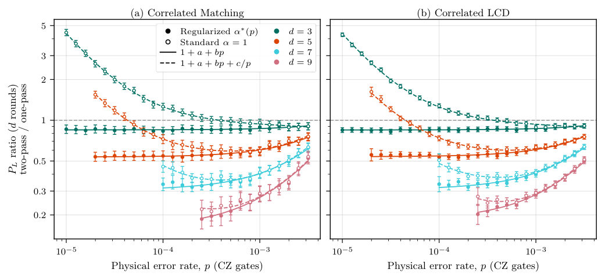
<figcaption class="paper-figure-caption"><b>Fig 1.</b> FIG. 1. Breakdown and regularization of correlated decoding below threshold. Ratio of the d-round logical error probability of two-pass correlated decoding to that of the corresponding one-pass decoder under SI1000 noise. (a) Correlated matching (CM) and regularized correlated matching (RCM), normalized by uncorrelated matching, for d = 3, 5, 7, 9. (b) Correlated and regularized LCD, normalized by uncorrelated LCD. Open markers denote the standard update, α = 1, and filled markers the regularized update with α∗(p). Dashed curves show fits containing the low-p term c/p, whereas solid curves show the regular form 1+a+bp. The horizontal line marks equal performance; values below unity favor...</figcaption>
</figure>
<figure class="paper-figure-card">
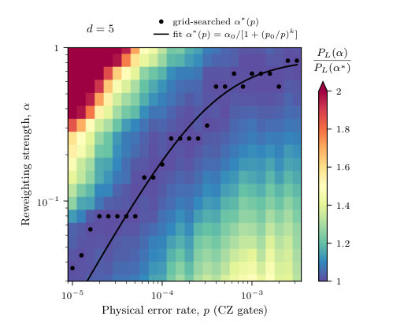
<figcaption class="paper-figure-caption"><b>Fig 2.</b> FIG. 2. Error-rate-dependent regularization tracks the optimal reweighting ridge. Logical-error landscape of RCM at d = 5 under SI1000 noise with r = d. The color scale shows PL(α)/ min˜α PL(˜α) over the tested strengths at each p. Black circles mark those empirical minimizers; the solid curve is the interpolation α∗(p) in Eq. (6). Standard correlated matching corresponds to α = 1. Near threshold the optimum remains close to the standard update, whereas deep below threshold it shifts toward weaker cross-subgraph reweighting.</figcaption>
</figure>
<figure class="paper-figure-card">
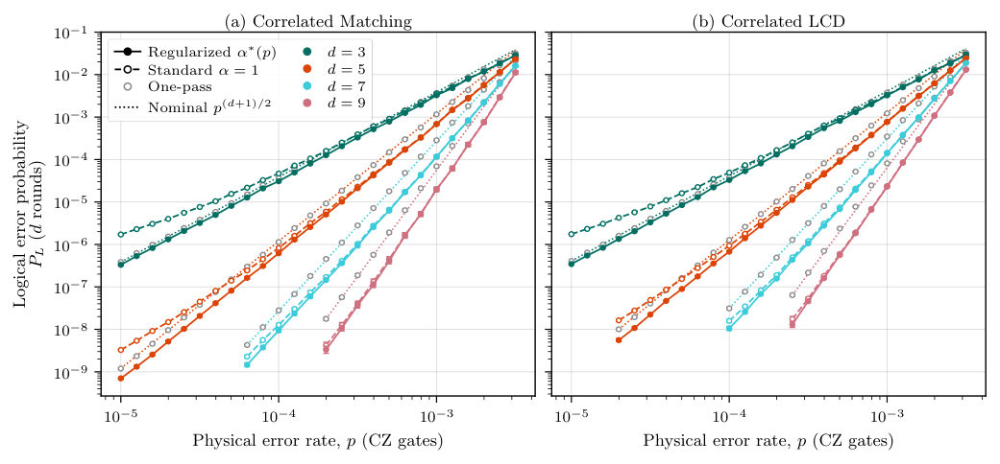
<figcaption class="paper-figure-caption"><b>Fig 3.</b> FIG. 3. Logical error probability PL for d-round memory as a function of physical error rate p under SI1000 noise, decoded with MWPM and LCD. The logical performance is evaluated for the uncorrelated (one-pass) decoder, the standard two-pass decoder (α = 1) and the optimal regularized correlated decoder with α = α∗. Each point is sampled using Stim. For LCD, sampling stops after 4000 failures or 1.2×1011 shots. For MWPM, each point uses a fixed number of shots (up to 1.9 × 1012), chosen to match the LCD shot count or to target approximately 2000 MWPM failures. Error bars are plotted, but are negligible for the majority of the data points. The non-regularized decoder diverges from the...</figcaption>
</figure>
<figure class="paper-figure-card">
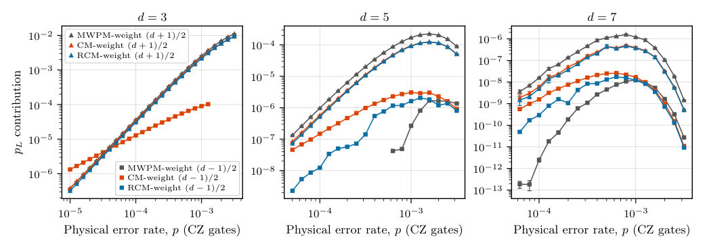
<figcaption class="paper-figure-caption"><b>Fig 4.</b> FIG. 4. Probability-weighted contributions to PL from fixed-size errors. Results are shown for rotated planar code memory simulations under SI1000 noise with r = d syndrome-extraction rounds and code distances d = {3, 5, 7}. We evaluate contributions from configurations containing exactly t = (d−1)/2 faults (squares) and t+1 = (d+1)/2 faults (triangles), resolved for matching, correlated matching (CM), and regularized correlated matching (RCM). Persistence of the t-fault contribution toward low p diagnoses a loss of the nominal distance scaling. Standard CM generates such a contribution, while RCM suppresses it.</figcaption>
</figure>
<figure class="paper-figure-card">
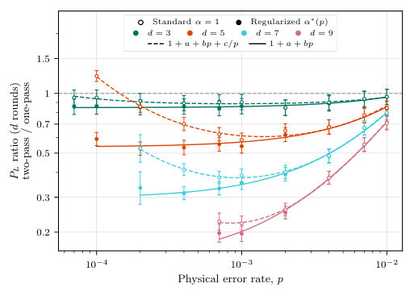
<figcaption class="paper-figure-caption"><b>Fig 5.</b> FIG. 6. Ratio of logical error probabilities for stan- dard and regularized correlated matching with re- spect to uncorrelated MWPM under uniform depo- larizing noise. Open markers denote the standard update, α = 1, and filled markers the regularized update with α∗(p). Dashed curves show fits of the form 1 + a + bp + c/p, and solid curves fits of the form 1 + a + bp. The horizontal line marks equal performance. As p →0, the standard correlated decoder degrades relative to the uncorrelated decoder, while regularization restores a correlated decoding advantage across the error rates studied.</figcaption>
</figure>
</div>
<p><strong>Summary.</strong> This paper investigates why advanced correlated decoding methods for surface codes lose their expected error suppression scaling when the physical error rate is very low. The authors demonstrate that the standard reweighting rule causes an artificial discounting of error costs. By introducing a specific, error-rate-dependent regularization parameter, they successfully restore the theoretical distance scaling, significantly improving the reliability of the quantum memory circuit.</p>
<p><strong>Why it may be interesting.</strong> The work provides a concrete, mathematically derived method (regularization) to improve the performance of quantum error correction codes in the deep sub-threshold regime, which is crucial for fault-tolerant quantum computation.</p>
<details>
<summary>Detailed structure</summary>
<p><strong>Main problem.</strong> Standard correlated decoding techniques for surface codes fail to maintain the expected effective distance scaling below the fault-tolerance threshold ($p 	o 0$).</p>
<p><strong>Main result.</strong> Introducing an error-rate-dependent regularization parameter restores the nominal distance scaling and preserves the advantage of correlated decoding deep below threshold.</p>
<p><strong>Method.</strong> The authors analyze the logical error probability scaling by comparing standard correlated decoding (CM/LCD) against an optimally regularized version (RCM/RC-LCD).</p>
<p><strong>Model / system.</strong> The study uses the surface code quantum memory circuit simulated under the SI1000 noise model, characterized by a two-qubit depolarizing error probability $p$.</p>
<p><strong>Key observables.</strong> Logical error probability ($P_L$) vs. physical error rate ($p$); the effective code distance, characterized by the scaling exponent of $P_L$.</p>
<p><strong>Important parameters / regimes.</strong> Code distance ($d$), physical error rate ($p$), and the regularization strength ($\alpha$).</p>
<p><strong>Assumptions / limitations.</strong> The failure is localized to the reweighting protocol, not the underlying decoders; the analysis is performed under the SI1000 noise model.</p>
<p><strong>Figures summary.</strong> Figures compare $P_L$ vs. $p$ for standard vs. regularized decoders, showing the recovery of expected scaling. Other figures analyze weight distributions and fault contributions.</p>
<p><strong>Paper structure.</strong> The paper first establishes the failure of standard correlated decoding at low $p$ by showing incorrect scaling. It then mathematically derives the failure mechanism related to weight discounting and proposes a regularization term $\alpha^*(p)$ to correct this, demonstrating its success in restoring theoretical scaling.</p>
</details>
<details>
<summary>Abstract</summary>
<p>Correlated decoding improves matching and clustering surface-code decoders by reweighting one decoding subgraph conditioned on the other's correction. We show that standard reweighting can cause correlated decoders to fail on size-$(d-1)/2$ fault configurations that a distance-$d$ code should correct, reducing error suppression deep below threshold. Under circuit-level noise, a single first-pass edge can discount several correlated edges, even though their joint occurrence requires additional independent faults, so the decoder favors an over-discounted correction. Regularizing the reweighting rule restores the nominal distance scaling and a clear correlated-decoding advantage.</p>
</details>
<p><sub><a href="#top">↑ back to top</a></sub></p>

<p><a id="paper-2610.25498"></a></p>
<h3 id="cryogenic-recharacterization-of-a-commercial-22-nm-fd-soi-foundry-standard-cell-library"><a href="http://arxiv.org/abs/2610.25498v1">Cryogenic Recharacterization of a Commercial 22 nm FD-SOI Foundry Standard-Cell Library</a></h3>
<p><strong>Authors:</strong> Mohamed Gharib, Rami Rasheedi, Salma Abdelzaher, Henry Shi, Mike Hammer, Llorenç Fanals-i-Batllori, Aldo Pena Perez, Antonino Miceli, Inna Partin-Vaisband<br>
<strong>Type:</strong> both · <strong>Category:</strong> quantum information and computing · <strong>PDF:</strong> <a href="https://arxiv.org/pdf/2610.25498v1">https://arxiv.org/pdf/2610.25498v1</a><br>
<strong>Analysis basis:</strong> full PDF text, analyzed in chunks</p>
<div class="figure-strip-hint">↔ Scroll figures horizontally</div>
<div class="paper-figures-scroll">
<figure class="paper-figure-card">
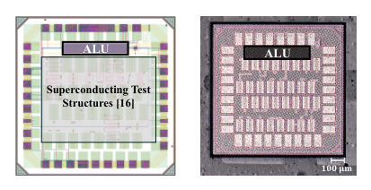
<figcaption class="paper-figure-caption"><b>Fig 1.</b> Fig. 2. Fabricated GF22FDX test chip. Left: physical layout. Right: optical micrograph of the received die, 100 µm scale bar. The outlined 32-bit ALU occupies 399.97 × 58.96 µm of the 1000 × 1000 µm die; the remainder holds superconducting test structures outside the scope of this work [16].</figcaption>
</figure>
<figure class="paper-figure-card">
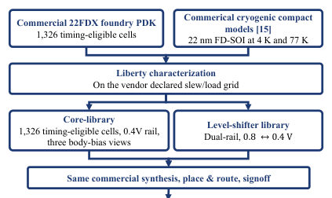
<figcaption class="paper-figure-caption"><b>Fig 2.</b> Fig. 1. Characterization and implementation flow. The 1,326 timing-eligible cells are recharacterized at 4 K and 0.4 V, with body-bias dependence evaluated across three bias conditions. No cryogenic cell redesign is performed and foundry semantics are retained.</figcaption>
</figure>
<figure class="paper-figure-card">
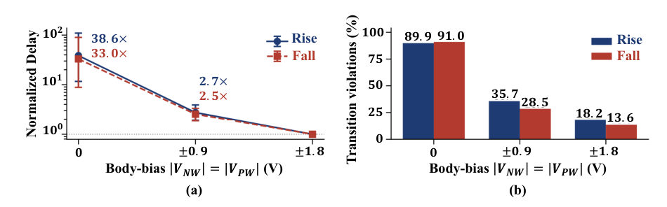
<figcaption class="paper-figure-caption"><b>Fig 3.</b> Fig. 3. Cell timing dependence on forward body bias at 4 K and 0.4 V, evaluated over 38,640 matched slew/load points. (a) Delay normalized to the ±1.8 V condition; markers denote medians and bars indicate the 10th–90th percentile range. (b) Fraction of 201,376 characterized output transitions exceeding the 0.7179 ns per-pin max_transition limit declared by the vendor library.</figcaption>
</figure>
<figure class="paper-figure-card">
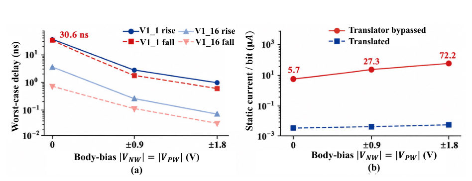
<figcaption class="paper-figure-caption"><b>Fig 4.</b> Fig. 4. The voltage-domain translator at 4 K. (a) Worst-case delay of the 0.8 V →0.4 V translator against forward body bias, for the smallest (V1_1) and largest (V1_16) drive. (b) Static current of the modeled outbound 0.4 V →0.8 V crossing, translator bypassed and in place. Bypassing under-drives the 0.8 V receiver and draws 72.2 µA per modeled path at ±1.8 V, against sub-nanoampere when translated.</figcaption>
</figure>
<figure class="paper-figure-card">
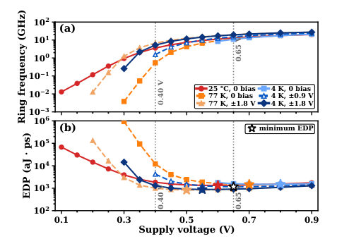
<figcaption class="paper-figure-caption"><b>Fig 5.</b> Fig. 5. Seven-stage ring oscillator formed from the extracted commercial foundry INV_1 cell at fanout one. (a) Oscillation frequency versus supply; each curve ends at the lowest tested supply sustaining oscillation. (b) Energy– delay product (EDP), minima starred. Forward body bias reduces the minimum EDP by 1.52× at 4 K and 1.60× at 77 K against the 25 °C minimum. Dotted lines mark the ALU’s 0.4 V cryogenic and 0.65 V room-temperature supplies. Core-supply power is used; the simulated body-bias contribution stays below 3 × 10−3 % of ring power. The cryogenic Liberty is delivered at 0.4 V only; every other supply shown is a direct compact-model evaluation.</figcaption>
</figure>
</div>
<p><strong>Summary.</strong> This paper develops and applies a cryogenic recharacterization flow to a commercial 22 nm FD-SOI standard-cell library to enable digital control logic operation at 4 K. The research quantifies significant performance degradation and power changes compared to room temperature, highlighting the critical need for specialized cryogenic design methodologies for quantum computing control systems.</p>
<p><strong>Why it may be interesting.</strong> While the core focus is on semiconductor device physics and VLSI design, the direct application is enabling the classical control infrastructure necessary for scaling up quantum computing hardware.</p>
<details>
<summary>Detailed structure</summary>
<p><strong>Main problem.</strong> The paper addresses the bottleneck of interfacing quantum processors, which operate at cryogenic temperatures, with room-temperature classical control electronics.</p>
<p><strong>Main result.</strong> The study quantifies the severe performance degradation (e.g., delay increases by factors of 33-38) and power issues when using standard commercial foundry libraries at 4 K, demonstrating the necessity of a cryogenic recharacterization flow.</p>
<p><strong>Method.</strong> A cryogenic recharacterization flow was developed for a 22 nm FD-SOI standard-cell library, involving extensive body-bias sweeping and post-route analysis of fabricated circuits.</p>
<p><strong>Model / system.</strong> The physical system is a commercial 22 nm FD-SOI foundry standard-cell library used to build digital control logic (like a 32-bit ALU) for quantum processors. The analysis models the behavior of these digital circuits at 4 K under various body biases.</p>
<p><strong>Key observables.</strong> Median rising/falling delays, static power dissipation ($\mu	ext{W}/	ext{bit}$), setup boundary frequency (MHz), and transition violations.</p>
<p><strong>Important parameters / regimes.</strong> Cryogenic temperature (4 K), low core supply voltage (0.4 V), and forward body bias ($\pm 0.9 	ext{ V}, \pm 1.8 	ext{ V}$).</p>
<p><strong>Assumptions / limitations.</strong> The methodology assumes that recharacterizing the standard-cell library while retaining original layouts and semantics is sufficient for cryogenic compatibility.</p>
<p><strong>Figures summary.</strong> Figures illustrate the characterization flow, the physical layout of the ALU, and the dependence of cell timing and transition compliance on forward body bias.</p>
<p><strong>Paper structure.</strong> The paper details the development of the cryogenic recharacterization flow, quantifies timing and power changes across various body biases, and validates the results using post-route analysis on a fabricated ALU test chip.</p>
</details>
<details>
<summary>Abstract</summary>
<p>Wiring and bandwidth bottlenecks between a quantum processor and room-temperature electronics can be reduced by placing digital control at the cryogenic stage, but commercial foundry standard-cell libraries are not specified for operation at 4 K. A cryogenic recharacterization flow is therefore developed for a commercial 22 nm FD-SOI foundry standard-cell library using commercially available cryogenic compact-device models, while retaining the original cell circuits, layouts, logic functions, and implementation semantics and remaining compatible with the commercial synthesis, place-and-route, and signoff methodology used at room temperature. Body-bias dependence is quantified over 38,640 matched slew/load points at zero, +/-0.9 V, and +/-1.8 V body bias. Relative to full bias, zero-bias operation increases the median rising and falling delays by 38.6x and 33.0x, while approximately 90% of transitions exceed the foundry-defined maximum-transition envelope. The 0.8 V-to-0.4 V level shifter is even more sensitive to body bias: its worst-case falling delay decreases from 30.6 ns at zero bias to 0.56 ns at +/-1.8 V. For the outbound 0.4 V-to-0.8 V crossing, driving the 0.8 V receiver without a level shifter dissipates 57.7 uW of static power per bit at full bias, against 0.196 nW when level-shifted. In post-route analysis of the unchanged extracted physical database of a fabricated 32-bit ALU, the register-to-register setup boundary increases from 1.3 MHz at zero bias to 37.9 MHz at +/-0.9 V and 132.9 MHz at +/-1.8 V.</p>
</details>
<p><sub><a href="#top">↑ back to top</a></sub></p>

<p><a id="paper-2610.26099"></a></p>
<h3 id="distributing-quantum-circuits-using-pre-distributed-entanglement-pairs-over-quantum-networks"><a href="http://arxiv.org/abs/2610.26099v1">Distributing Quantum Circuits Using Pre-Distributed Entanglement Pairs over Quantum Networks</a></h3>
<p><strong>Authors:</strong> Yukun Yang, Ranjani G. Sundaram, Himanshu Gupta<br>
<strong>Type:</strong> theory · <strong>Category:</strong> quantum information and computing · <strong>PDF:</strong> <a href="https://arxiv.org/pdf/2610.26099v1">https://arxiv.org/pdf/2610.26099v1</a><br>
<strong>Analysis basis:</strong> full PDF text, analyzed in chunks</p>
<div class="figure-strip-hint">↔ Scroll figures horizontally</div>
<div class="paper-figures-scroll">
<figure class="paper-figure-card">
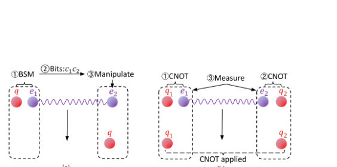
<figcaption class="paper-figure-caption"><b>Fig 1.</b> Fig. 1. Quantum communication. (a) Teleportation and (b) Telegate. Dashed boxes are the network nodes; the initial (final) state of the qubits is at the top (bottom).</figcaption>
</figure>
<figure class="paper-figure-card">
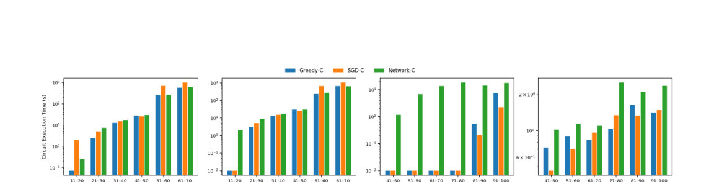
<figcaption class="paper-figure-caption"><b>Fig 2.</b> Fig. 2. Execution time of four benchmark families (QPE, QFT, Deutsch Jozsa, GHZ) under three pre-distributed EP trainers (Greedy-C, SGD-C, Network-C). Qubit allocation is fixed to Greedy-η. Results are shown for 10-wide qubit bins; the y-axis is logarithmic.</figcaption>
</figure>
<figure class="paper-figure-card">
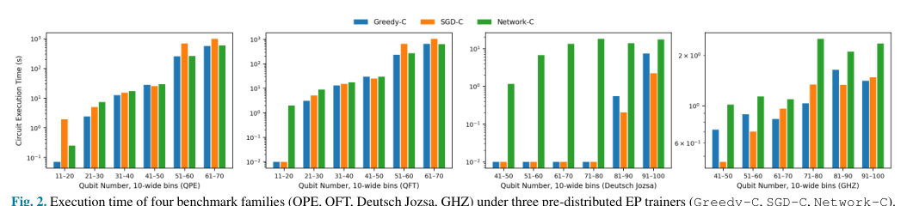
<figcaption class="paper-figure-caption"><b>Fig 3.</b> Fig. 3. Execution time of four benchmark families under three qubit-allocation algorithms (Greedy-η, exQAP-η, Annealing-η). The pre-distributed EP trainer is fixed to Greedy-C. Results are shown for 10-wide qubit bins; the y-axis is logarithmic.</figcaption>
</figure>
<figure class="paper-figure-card">
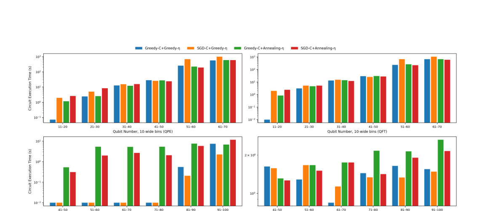
<figcaption class="paper-figure-caption"><b>Fig 4.</b> Fig. 4. Execution time of four benchmark families under joint combinations of EP trainers and qubit-allocation methods. We report oracle-aligned training, i.e., C is trained using the same η-method applied at test time. Results are shown for 10-wide qubit bins; the y-axis is logarithmic.</figcaption>
</figure>
</div>
<p><strong>Summary.</strong> This work proposes a framework to optimize quantum circuit execution across distributed quantum networks by proactively distributing entanglement pairs before computation begins. It formulates this as a joint optimization problem involving resource allocation and qubit placement. The methodology demonstrates that combining circuit-aware training for EPs with optimal qubit mapping significantly reduces overall execution time compared to simpler strategies.</p>
<p><strong>Why it may be interesting.</strong> While focused on computation, the resource management aspects—modeling resource decay, optimizing resource placement, and minimizing latency—are highly relevant to building scalable quantum hardware architectures.</p>
<details>
<summary>Detailed structure</summary>
<p><strong>Main problem.</strong> The paper addresses minimizing the execution time of a quantum circuit distributed across a quantum network by strategically utilizing pre-distributed entanglement pairs (EPs).</p>
<p><strong>Main result.</strong> The joint optimization of pre-distributed entanglement allocation and static qubit placement, guided by circuit-aware training, consistently achieves the lowest execution times for benchmark circuits like QPE and QFT.</p>
<p><strong>Method.</strong> The problem is solved in three stages: allocating EPs under a budget, computing a static qubit-to-memory allocation, and finally executing the circuit while accounting for on-demand entanglement generation latency.</p>
<p><strong>Model / system.</strong> The system is a quantum network modeled as a graph connecting quantum computers (nodes) with quantum memories. Remote gates require EPs, and local connectivity is modeled by a coupling graph.</p>
<p><strong>Key observables.</strong> Circuit execution time, total usage charge ($\Gamma$), and the number/latency of required entanglement pairs.</p>
<p><strong>Important parameters / regimes.</strong> Pre-distribution budget ($K$), tradeoff parameter ($\lambda$), and network distance/freshness scores used in cost modeling.</p>
<p><strong>Assumptions / limitations.</strong> The analysis enforces a static qubit-allocation function ($\eta$) and assumes that consuming pre-distributed EPs incurs negligible online latency.</p>
<p><strong>Figures summary.</strong> Figures compare execution time across different entanglement pair training methods (Greedy-C, SGD-C, Network-C) and qubit allocation algorithms (Greedy-$\eta$, exQAP-$\eta$, Annealing-$\eta$), showing the best results come from joint optimization.</p>
<p><strong>Paper structure.</strong> The paper systematically tackles the DQC-PD problem by first defining the resource allocation (EPs), then the mapping (qubit allocation), and finally the execution protocol, culminating in comparative evaluations on benchmark circuits.</p>
</details>
<details>
<summary>Abstract</summary>
<p>Distributing quantum circuits across a network of quantum devices is a recent approach to improve the scalability of quantum computation. Entangled pairs of qubits distributed across network nodes are used as a communication resource for executing inter-node (remote) gates. However, establishing these entanglement pairs incurs significant latency, and doing so during the circuit's execution may lead to the decoherence of logical qubits. Instead, it may be beneficial to distribute certain entanglement pairs before the circuit is executed. Thus, we consider the problem of distributing a quantum circuit across a quantum network containing some pre-distributed entanglement pairs and seek to minimize the execution time of the circuit.   We address this problem in three steps. First, given the quantum network and (optionally) a probability distribution over training circuits, we determine a set of pre-distributed entanglement pairs under a specified budget. Second, we compute a qubit-to-memory allocation that minimizes the expected execution time given these pre-distributed resources. Finally, we identify any additional entanglement pairs required during execution, generate them concurrently, and execute the circuit gates. We evaluate our methods on a broad range of benchmark circuits.</p>
</details>
<p><sub><a href="#top">↑ back to top</a></sub></p>

<p><a id="paper-2610.26156"></a></p>
<h3 id="dynamical-batching-how-class-cycling-training-shapes-the-internal-structure-of-neural-networks"><a href="http://arxiv.org/abs/2610.26156v1">Dynamical Batching: How Class-Cycling Training Shapes the Internal Structure of Neural Networks</a></h3>
<p><strong>Authors:</strong> Nicolás Ratier-Werbin, Samuel Lozano, Miguel Ruiz-García<br>
<strong>Type:</strong> theory · <strong>Category:</strong> disordered systems and neural networks · <strong>PDF:</strong> <a href="https://arxiv.org/pdf/2610.26156v1">https://arxiv.org/pdf/2610.26156v1</a><br>
<strong>Analysis basis:</strong> full PDF text, analyzed in chunks</p>
<div class="figure-strip-hint">↔ Scroll figures horizontally</div>
<div class="paper-figures-scroll">
<figure class="paper-figure-card">
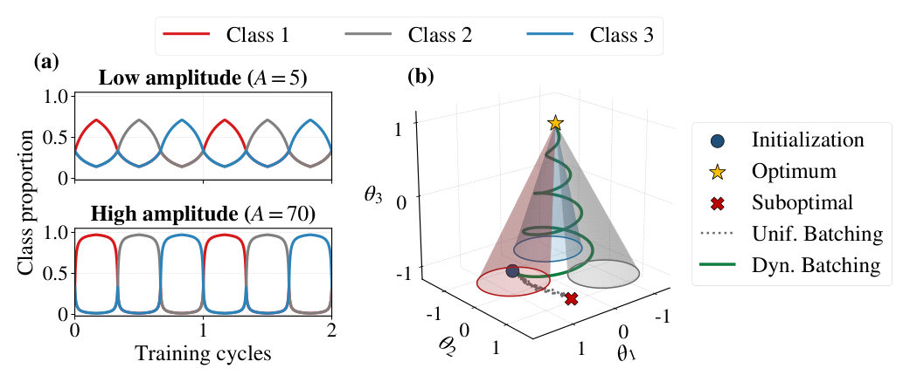
<figcaption class="paper-figure-caption"><b>Fig 1.</b> FIG. 1. Learning by Dynamical Batching (DB). (a) Class proportion pi(t), the fraction of each mini-batch drawn from class i, over two training cycles (C = 3). At low amplitude (top, A = 5) every batch still contains all three classes: the focal-class proportion rises from 1/3 to 0.71, while the other two fall to 0.14. At high amplitude (bottom, A = 70) the emphasized class dominates the batch, its proportion saturating near 1, while the other two nearly vanish. A cycle is C consecutive periods, one sweep through the classes. (b) Schematic of the parameter space (illustrative, not data). Each class-specialized objective is satisfied in an extended, cone-shaped region (one cone per class,...</figcaption>
</figure>
<figure class="paper-figure-card">
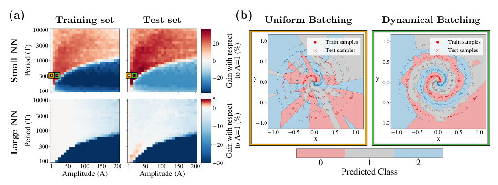
<figcaption class="paper-figure-caption"><b>Fig 2.</b> FIG. 2. Dynamical Batching (DB) on the three-arm spiral. (a) Accuracy gain in percentage points over the Uniform Batching (UB, A = 1) run with the same period T, across oscillation amplitude A and period T, for the small (H = 50) and large (H = 500) networks; training and test gain shown separately. Color scales differ between rows. Each cell averages 5 seeds; the yellow and green boxes mark the UB baseline (A = 1) and the best DB configuration, (A, T) = (20, 320), used in (b) and in Sec. IV. For the small network, a broad region of positive gain reaches +37.87 points in test accuracy, next to a failure region at large A and small T. The large network already reaches 99.00% train and 95.93%...</figcaption>
</figure>
<figure class="paper-figure-card">
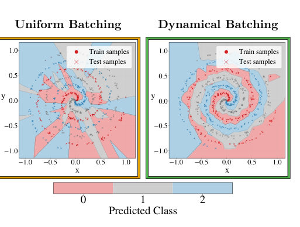
<figcaption class="paper-figure-caption"><b>Fig 3.</b> Figure 3d illustrates the functional side of this picture in one representative DB run. Late in training, accuracy is at ceiling for most of the period, drops in its middle part while the loss rises, and recovers within 5–10 steps once the emphasis on the focal class has decreased, a small fraction of the T = 320 steps of the period. Early in training, accuracy stays between ≈0.35 and ≈0.5 for almost the whole period. The abrupt onset and end of the dip (t ≈116 and t ≈205) coincide with the flooring of Eq. (2): at these steps the number of examples of each non-focal class drops from 3 to 2 per batch, and later returns to 3. The non-focal classes never vanish from the batch (at the peak, g =...</figcaption>
</figure>
<figure class="paper-figure-card">
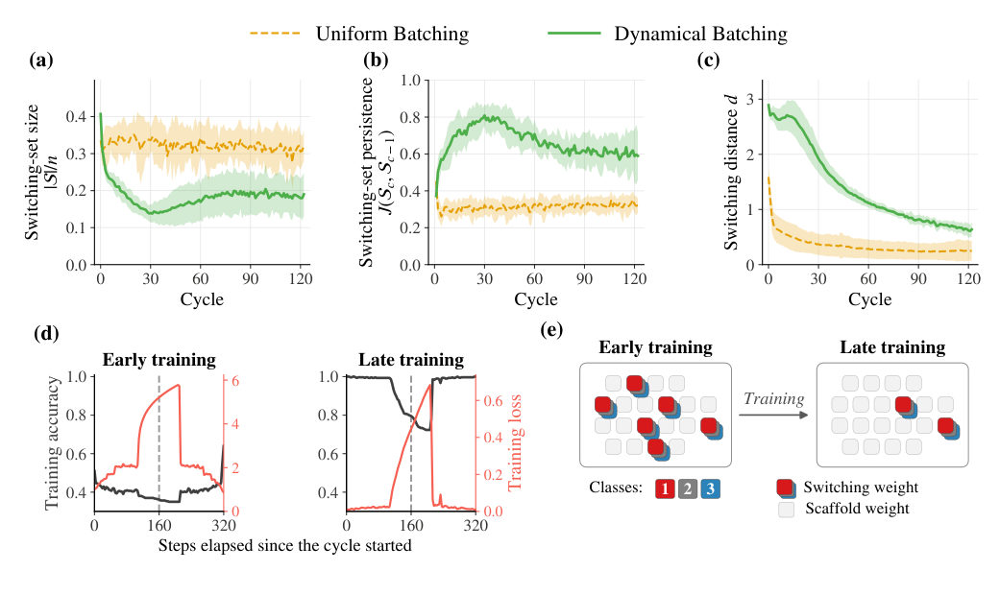
<figcaption class="paper-figure-caption"><b>Fig 4.</b> FIG. 3. Class switching concentrates on a small, persistent set of weights, and the distance between class states shrinks over training. Spiral, small network, (A, T) = (20, 320), B = 50. One cycle is 3 × 320 = 960 steps, giving 130 cycles, of which the first 122 are dynamical and the rest fall in the uniform final 5% and are excluded from the analysis. Solid green: Dynamical Batching (DB); dashed amber: Uniform Batching (UB, A = 1). (a) Switching-set size |S|/n: the fraction of all weights needed to carry 80% of the class-to-class variation. (b) Persistence of the switching set: the fraction of weights switching in either cycle that switch in both. (c) Switching distance d (Eq. (4)), the...</figcaption>
</figure>
<figure class="paper-figure-card">
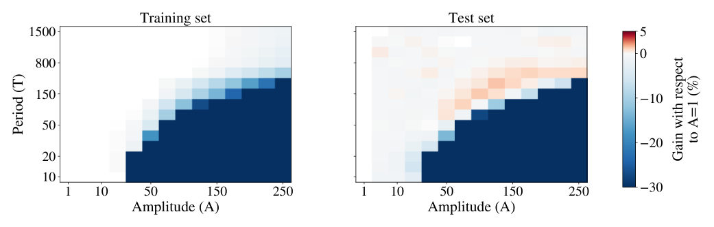
<figcaption class="paper-figure-caption"><b>Fig 5.</b> FIG. 4. Accuracy change on a channel-narrowed ResNet-10. Gain in training (left) and test (right) accuracy, in percentage points, relative to the Uniform Batching (UB) run (A = 1) with the same period T (UB averaged over all periods: train 100.00%, test 79.84%), across amplitude A and period T, for a ResNet-10 with channel widths scaled by 0.15, trained on CIFAR-10. Each cell averages 5 seeds. The color scale is clipped at −30 points: dark blue cells are runs that collapse, mostly to chance level. Axes are categorical; only a subset of the tested values is labeled.</figcaption>
</figure>
</div>
<p><strong>Summary.</strong> This work introduces Dynamical Batching (DB), a training protocol that cyclically emphasizes different classes in a neural network's training batches. By comparing DB to standard uniform batching, the authors show that DB not only improves classification accuracy in certain regimes but also fundamentally changes the network's internal structure, localizing and stabilizing the weights responsible for switching between class-specific solutions.</p>
<p><strong>Why it may be interesting.</strong> The analysis of weight localization and persistent structural changes under non-equilibrium training protocols provides an analogy to understanding how external driving forces or structured environmental constraints can stabilize complex, non-trivial solutions in physical systems.</p>
<details>
<summary>Detailed structure</summary>
<p><strong>Main problem.</strong> The paper investigates whether cyclically varying the class composition of training batches (Dynamical Batching, DB) can modify both the performance and the internal organization of neural networks, especially when standard training fails.</p>
<p><strong>Main result.</strong> DB significantly improves test accuracy over standard Uniform Batching (UB) in certain capacity-limited networks and induces a weight organization characterized by a smaller, more persistent set of weights responsible for class switching.</p>
<p><strong>Method.</strong> The authors compare DB, a protocol emphasizing classes cyclically, against UB, which uses uniform class proportions, by analyzing weight changes and test accuracy across various synthetic and real-world datasets.</p>
<p><strong>Model / system.</strong> The study uses neural networks (MLPs and CNNs) trained on multi-class classification tasks, including the three-arm spiral and CIFAR-10. The training dynamics are governed by the sampling protocol applied to the mini-batches.</p>
<p><strong>Key observables.</strong> Test accuracy, size of the weight switching set, Jaccard overlap of switching sets, and switching distance between class-specialized states.</p>
<p><strong>Important parameters / regimes.</strong> Amplitude ($A$) and Period ($T$) of the class cycling schedule; network capacity (e.g., width of ResNet-10); batch size and learning rate.</p>
<p><strong>Assumptions / limitations.</strong> The protocol is designed to be drop-in, leaving the per-example loss and optimizer unchanged; the benefit is hypothesized to stem from the localization and persistence of weight changes.</p>
<p><strong>Figures summary.</strong> Figures illustrate the class proportion changes over time, map the test accuracy gain vs. Amplitude and Period, and compare weight variation metrics (Switching Set, Persistence, Distance) between DB and UB protocols.</p>
<p><strong>Paper structure.</strong> The paper introduces DB and compares it to UB, first on toy models (three-arm spiral) to establish weight-level diagnostics (switching set size, persistence). It then extends these findings to real-world CNNs (CIFAR-10), showing performance gains correlated with network capacity limitations.</p>
</details>
<details>
<summary>Abstract</summary>
<p>We investigate whether cyclically varying the class composition of training batches can modify both the performance and the internal organization of neural networks. Motivated by nonequilibrium systems, in which cycling between related sub-goals can make switching between their solutions increasingly efficient, we introduce Dynamical Batching (DB), a sampling protocol that periodically emphasizes each class while leaving the loss and the optimizer unchanged, and compare it with Uniform Batching (UB), in which every mini-batch has equal class proportions. In the regime where standard training fails, DB changes the outcome: on a three-arm spiral, a capacity-limited MLP that plateaus far below perfect accuracy under UB fits the training data under DB. Tracking individual weights, we find that under DB the change between class-specialized states is carried by a smaller set of weights than under UB, and that this set is markedly more persistent from cycle to cycle, on every synthetic dataset we test and in a wider network that fits the data under both protocols. This organization is a signature of the protocol rather than a predictor of its benefit: it appears equally where DB leaves accuracy unchanged. On CIFAR-10, the same protocol modestly improves the test accuracy of a channel-narrowed ResNet-10, a standard residual architecture, and of a second capacity-limited convolutional network. These results show that how class emphasis is distributed in time can shape both the solution a network reaches and the internal structure of the network.</p>
</details>
<p><sub><a href="#top">↑ back to top</a></sub></p>

<p><a id="paper-2610.25968"></a></p>
<h3 id="efficient-block-encodings-for-ensembles-of-molecular-hamiltonians"><a href="http://arxiv.org/abs/2610.25968v1">Efficient Block Encodings for Ensembles of Molecular Hamiltonians</a></h3>
<p><strong>Authors:</strong> Cristian L. Cortes, Andrew J. Jenkins, William Pol, Dario Rocca, Mark Steudtner, Gian-Luca R. Anselmetti, Matthias Degroote, Nikolaj Moll, Raffaele Santagati, Michael Streif, Markus R. Hermann<br>
<strong>Type:</strong> theory · <strong>Category:</strong> quantum information and computing · <strong>PDF:</strong> <a href="https://arxiv.org/pdf/2610.25968v1">https://arxiv.org/pdf/2610.25968v1</a><br>
<strong>Analysis basis:</strong> full PDF text, analyzed in chunks</p>
<div class="figure-strip-hint">↔ Scroll figures horizontally</div>
<div class="paper-figures-scroll">
<figure class="paper-figure-card">
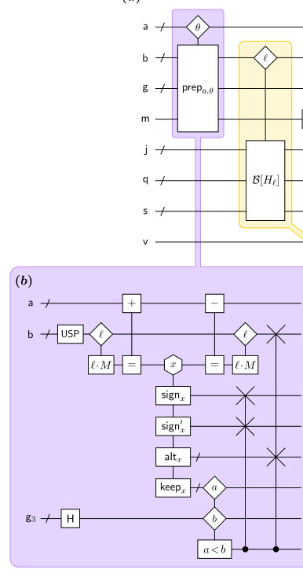
<figcaption class="paper-figure-caption"><b>Fig 1.</b> FIG. 1. (a) SVD-THC circuit for muxθ B[ ˆHθ/λ], with respect to angle indices θ in register a. The subroutine labeled ‘ℓ= K’ flips a qubit v in the |K⟩subspace of register b. Diamond-shaped controls are our notation for general gate inputs. The Z gate on m encodes a phase. All quantum registers are listed in Table I. (b) Outer state preparation. A θ-multiplexed version of Alias Sampling [40]. After a uniform state preparation USP on the b register, a joint index x is computed in order to load index aliases altx and coefficient data keepx, along with signs signx and their aliases sign′ x efficiently. To this end, within the |ℓ⟩subspace of b, a temporary register is initialized in |ℓM⟩, and...</figcaption>
</figure>
<figure class="paper-figure-card">
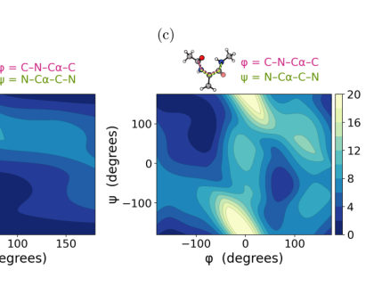
<figcaption class="paper-figure-caption"><b>Fig 2.</b> FIG. 3. Potential energy surfaces (g-xTB) for (a) relaxed and rigid BCE, as well as the (b) glycine and (c) alanine dipeptides vs the backbone (φ, ψ), on respectively 37 × 72 and 72 × 72 grids. Each panel carries an inset showing the molecule and the coordinate being scanned. Panel (a) shows a filmstrip of ten scanned geometries. Panels (b) and (c) show the two backbone dihedrals as colored dashed lines over the four atoms that define them; all remaining internal coordinates are drawn in gray and relaxed at every grid point.</figcaption>
</figure>
<figure class="paper-figure-card">

<figcaption class="paper-figure-caption"><b>Fig 3.</b> FIG. 4. Correlation energy error versus retained SVD rank K for (a) BCE including rigid and relaxed convergence, (b) relaxed glycine dipeptide, (c) relaxed alanine dipeptide. Gray dashed line is the 0.6 mHa target. Dashed lines of the same color give the median error over the grid, added as a reference. Every point is evaluated at all geometries of the full grid.</figcaption>
</figure>
<figure class="paper-figure-card">
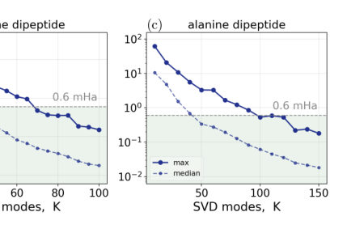
<figcaption class="paper-figure-caption"><b>Fig 4.</b> Figure 4 shows the convergence of ε∞(K) as well as the median energy error with respect to the number of retained SVD modes K for the three systems. Figure 4(a) highlights the effect of relaxation on compressibility. The rigid BCE scan contains no relaxation-induced structure and reaches ε∞= 2.3 × 10−3 mHa by K = 9, whereas the relaxed scan does not reach similar accuracy</figcaption>
</figure>
<figure class="paper-figure-card">
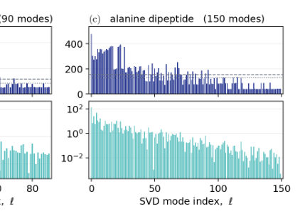
<figcaption class="paper-figure-caption"><b>Fig 5.</b> FIG. 5. Per-mode structure of the three deployed SVD-THC encodings of the relaxed molecules in Table III, plotted against the SVD mode index ℓ, with modes ordered by decreasing ωℓ. Top: THC rank Rℓ, with the mean (dashed) and median (dotted) rank, 31 and 20 for BCE, 146 and 104 for glycine dipeptide, and 153 and 130 for alanine dipeptide. Bottom: effective norm σℓ|Vℓ(θ∗)| on a logarithmic scale, where θ∗is the geometry that attains λ. The effective norms sum exactly to λ.</figcaption>
</figure>
</div>
<p><strong>Summary.</strong> This paper introduces SVD-THC, a novel technique to efficiently encode molecular Hamiltonians defined over large ensembles of geometries. By using Singular Value Decomposition, it compresses the required quantum circuit size, leading to massive reductions in the number of required quantum gates compared to state-of-the-art methods. This makes coherent processing of molecular conformational landscapes feasible for fault-tolerant quantum computation.</p>
<p><strong>Why it may be interesting.</strong> This work provides a concrete, resource-aware quantum primitive for simulating complex molecular dynamics, directly addressing the scaling bottleneck in quantum chemistry simulations.</p>
<details>
<summary>Detailed structure</summary>
<p><strong>Main problem.</strong> Developing quantum algorithms to process electronic structure calculations across an ensemble of molecular geometries coherently, which requires highly efficient Hamiltonian block encoding circuits.</p>
<p><strong>Main result.</strong> The proposed SVD-THC method constructs a single multiplexed block encoding circuit whose Toffoli complexity grows only weakly with the number of geometries, yielding massive reductions in required quantum gates compared to naive methods.</p>
<p><strong>Method.</strong> The core method is SVD-THC, which uses Singular Value Decomposition (SVD) to compress the ensemble of geometry-dependent Hamiltonians into a superposition of a small number of geometry-independent mode Hamiltonians.</p>
<p><strong>Model / system.</strong> The system involves molecular Hamiltonians parameterized by internal rotational coordinates (e.g., in 1-bromo-2-chloroethane or dipeptides), forming an ensemble over a product grid of geometries.</p>
<p><strong>Key observables.</strong> Toffoli complexity, Toffoli gate counts, and the compression factor (e.g., 35–200x reduction in gates).</p>
<p><strong>Important parameters / regimes.</strong> The scaling must be sublinear in the ensemble size ($o(M)$), and the energy accuracy must be maintained (e.g., CCSD correlation energy within $0.6 	ext{ mHa}$).</p>
<p><strong>Assumptions / limitations.</strong> The approach assumes that the ensemble of Hamiltonians exhibits significant redundancy, allowing for effective compression via SVD.</p>
<p><strong>Figures summary.</strong> Figures compare resource estimates (Toffoli gates) for different quantum phase estimation approaches (SVD-THC vs. sequential/sliced QPE) across various molecular systems.</p>
<p><strong>Paper structure.</strong> The paper introduces the problem of ensemble encoding, details the SVD-THC technique by expanding the Hamiltonian into mode Hamiltonians, and then rigorously compares the resource scaling (Toffoli gates) against established methods using molecular model systems.</p>
</details>
<details>
<summary>Abstract</summary>
<p>Accurately characterizing molecular properties and reactivity often requires electronic-structure calculations across an ensemble of molecular geometries. Quantum algorithms that process such ensembles coherently could address this challenge, but they require Hamiltonian block encoding circuits that combine advanced factorization techniques with sublinear scaling in ensemble size. Here, we introduce SVD-THC, which extends tensor hypercontraction to sets of Hamiltonians defined at different nuclear geometries through a singular value decomposition of the ensemble. We use SVD-THC to construct a single multiplexed block encoding circuit for all geometries in an ensemble. We then evaluate the approach on ensembles generated by varying internal rotational coordinates in 1-bromo-2-chloroethane as well as in glycine and alanine dipeptides, corresponding to established model systems for peptide conformational landscapes, with up to 5,184 geometries. Across several resolutions of the internal-coordinate grids, the Toffoli complexity of the resulting circuits grows only weakly with the number of geometries, changing by at most 12\% over grids that differ in size by up to 576$\times$. In an energy-thresholding circuit, this yields 35--200$\times$ fewer Toffoli gates than slicing together single-geometry block encodings. This approach could help make coherent processing of molecular geometry ensembles a useful primitive for fault-tolerant quantum computing.</p>
</details>
<p><sub><a href="#top">↑ back to top</a></sub></p>

<p><a id="paper-2610.25194"></a></p>
<h3 id="electronic-structure-magnetic-order-and-anisotropic-magnetoresistance-in-math1400math-0-math1401math-x-le1"><a href="http://arxiv.org/abs/2610.25194v1">Electronic structure, magnetic order and anisotropic magnetoresistance in $\mathbf{Eu_{1-x}Gd_xCd_2P_2}$ (0 $\le$ x $\le$1)</a></h3>
<p><strong>Authors:</strong> Yogendra Singh Negi, Tulika Maitra<br>
<strong>Type:</strong> theory · <strong>Category:</strong> strongly correlated electrons · <strong>PDF:</strong> <a href="https://arxiv.org/pdf/2610.25194v1">https://arxiv.org/pdf/2610.25194v1</a><br>
<strong>Analysis basis:</strong> full PDF text, analyzed in chunks</p>
<div class="figure-strip-hint">↔ Scroll figures horizontally</div>
<div class="paper-figures-scroll">
<figure class="paper-figure-card">
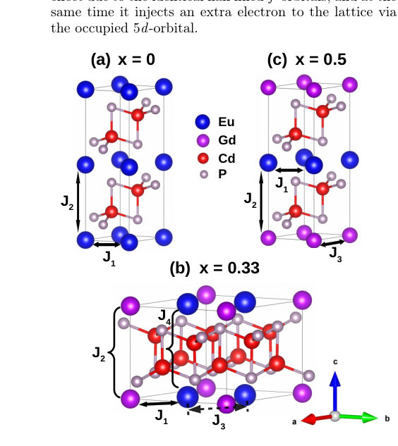
<figcaption class="paper-figure-caption"><b>Fig 1.</b> FIG. 1. Crystal structure of (a) EuCd2P2, (b) Eu0.67Gd0.33Cd2P2 and (c) Eu0.5Gd0.5Cd2P2, where Gd, Eu, Cd and P ions are shown in magenta, blue, red and grey col- ors respectively. The exchange interactions considered in the calculations are also shown for each case.</figcaption>
</figure>
<figure class="paper-figure-card">
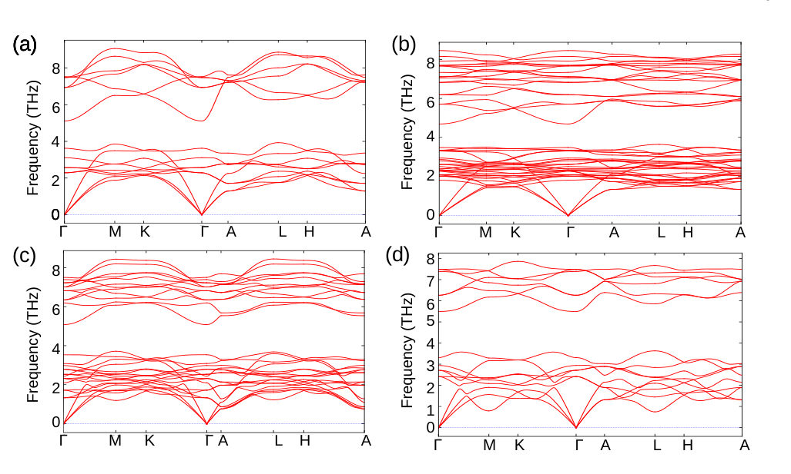
<figcaption class="paper-figure-caption"><b>Fig 2.</b> FIG. 2. Phonon band structures of Eu1−xGdxCd2P2. Panels (a), (b), (c) and (d) correspond to x = 0, 0.33, 0.5 and 1, respectively.</figcaption>
</figure>
<figure class="paper-figure-card">
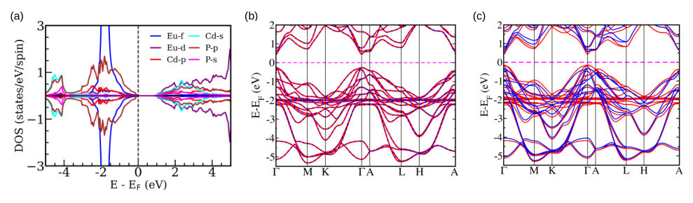
<figcaption class="paper-figure-caption"><b>Fig 3.</b> FIG. 3. Electronic structure of EuCd2P2 calculated within the GGA + U approximation: (a) partial density of states (PDOS) in the A-AFM state, (b) band structure in the A-AFM state, and (c) band structure in the FM state. The red and blue lines represent spin-up and spin-down states, respectively.</figcaption>
</figure>
<figure class="paper-figure-card">
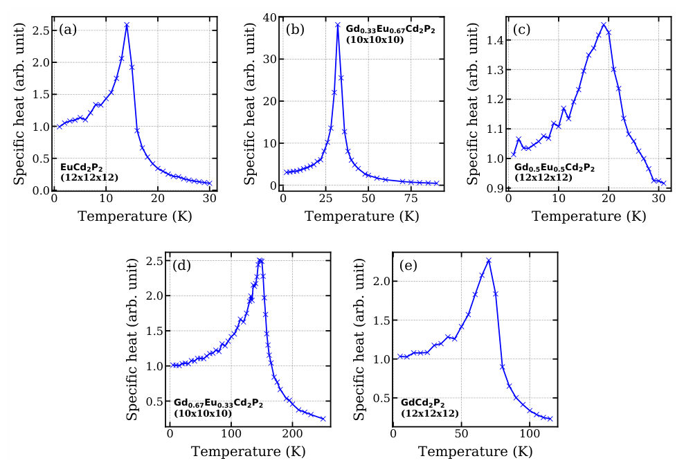
<figcaption class="paper-figure-caption"><b>Fig 4.</b> FIG. 4. Transition temperature of Eu1−xGdxCd2P2 for: (a) EuCd2P2, (b) Gd0.33Eu0.67Cd2P2, (c) Gd0.50Eu0.50Cd2P2, (d) Gd0.67Eu0.33Cd2P2, and (e) GdCd2P2.</figcaption>
</figure>
<figure class="paper-figure-card">
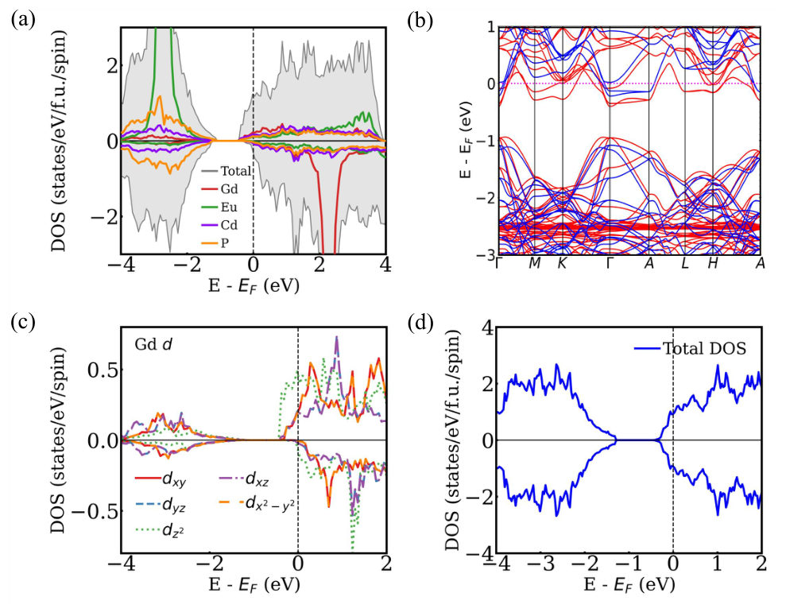
<figcaption class="paper-figure-caption"><b>Fig 5.</b> FIG. 5. Electronic structure of Eu0.67Gd0.33Cd2P2 in the FM state: (a) PDOS, (b) band structure, and (c) lm-decomposed d-orbital DOS for Gd, all calculated within GGA + U; and (d) total density of states (TDOS) in the paramagnetic (PM) state calculated within standard GGA, treating 4f electrons as core states.</figcaption>
</figure>
</div>
<p><strong>Summary.</strong> This theoretical study uses DFT and Monte Carlo methods to map the magnetic and electronic phase diagram of $  ext{Eu}_{1-x}   ext{Gd}_x   ext{Cd}_2   ext{P}_2$ as a function of Gd doping. The authors find that the magnetic order oscillates between antiferromagnetic and ferromagnetic states, leading to the prediction of colossal anisotropic magnetoresistance at specific doping levels. This work highlights the tunability of magnetotransport properties in these correlated materials.</p>
<p><strong>Why it may be interesting.</strong> The study provides a detailed theoretical map of how doping can tune magnetic order and transport properties in a strongly correlated material, offering insights into designing next-generation spintronic devices.</p>
<details>
<summary>Detailed structure</summary>
<p><strong>Main problem.</strong> The study investigates how electron doping, achieved via Gd substitution, affects the magnetic transition and Colossal Magnetoresistance (CMR) behavior in the $  ext{Eu}_{1-x}   ext{Gd}_x   ext{Cd}_2   ext{P}_2$ system.</p>
<p><strong>Main result.</strong> The ground state magnetic order oscillates between A-AFM and FM as a function of doping concentration, and colossal anisotropic magnetoresistance is predicted for specific doping levels ($x=0.125$ and $x=0.5$).</p>
<p><strong>Method.</strong> The research employs Density Functional Theory (DFT) calculations, supplemented by Monte Carlo simulations on a Heisenberg spin model, to predict magnetic and electronic properties.</p>
<p><strong>Model / system.</strong> The physical system is the layered magnetic semiconductor $ ext{Eu}_{1-x}   ext{Gd}_x   ext{Cd}_2   ext{P}_2$. Gd substitution acts as an electron dopant, modifying the magnetic exchange interactions and electronic character.</p>
<p><strong>Key observables.</strong> Ground state magnetic order (A-AFM vs. FM), Colossal Anisotropic Magnetoresistance (AMR), magnetic transition temperature ($T_C$), and band gap.</p>
<p><strong>Important parameters / regimes.</strong> Doping concentration $x$ (ranging from 0 to 1), and the electron carrier density.</p>
<p><strong>Assumptions / limitations.</strong> The calculations utilize $   ext{GGA}+   ext{U}$ and $   ext{GGA}+   ext{U}+ ext{SO}$ approximations, and the mechanism is compared to double exchange, suggesting strong $4f-5d$ exchange interactions.</p>
<p><strong>Figures summary.</strong> Figures illustrate the evolution of the electronic structure (DOS/Band structure) and the magnetic transition temperatures ($C_V$ vs. $T$) across different doping levels.</p>
<p><strong>Paper structure.</strong> The paper systematically analyzes the magnetic ground state and electronic structure across the doping series ($x$). It first establishes the parent compound ($x=0$), then tracks the transition from A-AFM to FM, predicting AMR based on the change in electronic character (insulating vs. metallic) along specific crystallographic directions.</p>
</details>
<details>
<summary>Abstract</summary>
<p>Recently, $\text{EuCd}_2\text{P}_2$ has attracted increased attention for its colossal magnetoresistive (CMR) property, the mechanism of which seems to deviate from that of known canonical CMR compounds such as manganites. Many studies underscore the role of low density of hole carriers caused by Eu vacancies, particularly in stabilizing ferromagnetic (FM) order and modifying electrical transport and magnetoresistive responses in this compound. A magnetic polaron based mechanism rather than double exchange based mechanism is being proposed to explain the CMR effect for this compound. In this work, we explore the effect of elctron doping on the magnetic transition and CMR behaviour via Gd substitution at Eu sites with varying concentration (x) in Eu$_{1-x}$Gd$_{x}$Cd$_2$P$_2$. Our Density Functional Theory (DFT) and Monte Carlo-based calculations reveal an oscillating ground state magnetic order as a function of electron carrier density. The ground state is found to be A-AFM metal for x=0.056, 0.125 and 0.5 while it becomes ferromagnetic metal at x= 0.33, 0.67 and 1. Most importantly, we predict colossal anisotropic magnetoresistance in this compound for x=0.125 and 0.5. The underlying mechanism of anisotropic CMR in this compound looks similar to double exchange like due to the presence of a strong intra-site 4\textit{f}-5\textit{d} ferromagnetic exchange interaction and an itinerant electron in the hybridized conduction states. The oscillating ground state magnetic order and the enhancement of transition temperature (as high as 150K for x=0.67) as a function of electron carrier density offers a new avenue to tune the magnetotransport property in this compound and offers an excellent platform for designing future spintronics devices.</p>
</details>
<p><sub><a href="#top">↑ back to top</a></sub></p>

<p><a id="paper-2610.24317"></a></p>
<h3 id="encoding-hyperuniformity-in-geometric-networks-structural-signatures-and-diffusion-dynamics"><a href="http://arxiv.org/abs/2610.24317v1">Encoding Hyperuniformity in Geometric Networks: Structural Signatures and Diffusion Dynamics</a></h3>
<p><strong>Authors:</strong> Yongyi Wang, Eli Newby, Yang Jiao, Salvatore Torquato, Réka Albert<br>
<strong>Type:</strong> theory · <strong>Category:</strong> statistical mechanics · <strong>PDF:</strong> <a href="https://arxiv.org/pdf/2610.24317v1">https://arxiv.org/pdf/2610.24317v1</a><br>
<strong>Analysis basis:</strong> full PDF text, analyzed in chunks</p>
<div class="figure-strip-hint">↔ Scroll figures horizontally</div>
<div class="paper-figures-scroll">
<figure class="paper-figure-card">
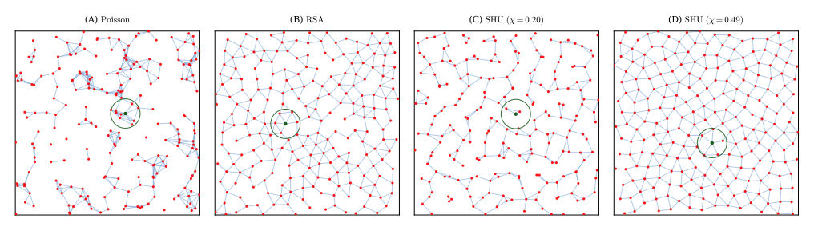
<figcaption class="paper-figure-caption"><b>Fig 1.</b> Figure 1: Demonstration of geometric networks with R = 1.2 (0.012L) constructed from (A) Poisson, (B) RSA, (C) SHU (χ = 0.20), and (D) SHU (χ = 0.49) point configurations. Each point is connected to all other points within the connection radius R, as illustrated by the green circle. Although the near-hyperuniform RSA configuration exhibits stronger local order than the SHU (χ = 0.20) disordered hyperuniform systems, the latter possesses hidden long-range order. Therefore, distinguishing these systems requires a network construction that is sensitive to structural information beyond short-range local order.</figcaption>
</figure>
<figure class="paper-figure-card">
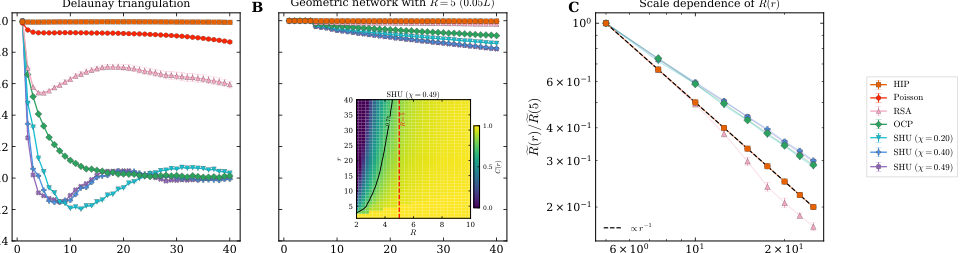
<figcaption class="paper-figure-caption"><b>Fig 2.</b> Figure 2: Network density correlation C(r), as defined in Eq. 9, for (A) Delaunay triangulation networks and (B) geometric networks with connection radius R = 5 (0.05L), constructed from the point configurations considered here. The inset in (B) shows C(r) for the SHU (χ = 0.49) system as a function of spatial scale r over a range of connection radii R. The black contour denotes C0 = 0.75, and the red dashed line marks R = 5. (C) Scale dependence of the relative connection range eR(r), normalized by eR(5), as defined in Eq. 3. For all systems, eR(r) decreases with r, indicating that Rc(r) grows more slowly than the spatial scale being probed over the scales examined.</figcaption>
</figure>
<figure class="paper-figure-card">
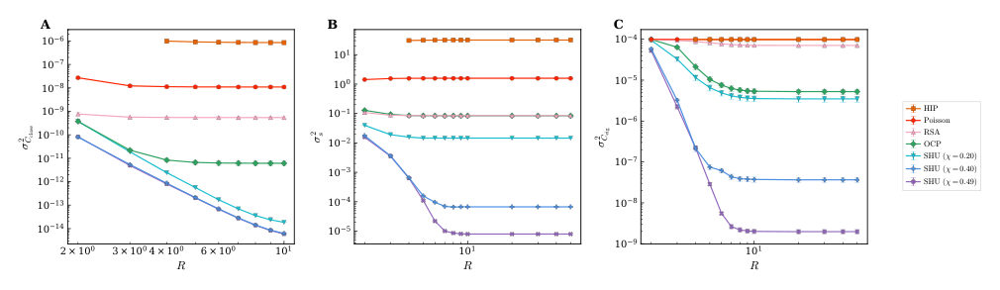
<figcaption class="paper-figure-caption"><b>Fig 3.</b> Figure 3: Variance of (A) the closeness centrality, σ2 Cclose, (B) the vertex strength, σ2 s, and (C) the eigen- vector centrality, σ2 Ceig, for geometric networks as a function of the connection radius R. Hyperuniform geometric networks exhibit suppressed variance in all three structural centrality measures. The hierarchy of the variances reflects the degree of hyperuniformity of the underlying point configurations. We note that the numerical values of different centrality measures are not directly comparable.</figcaption>
</figure>
<figure class="paper-figure-card">
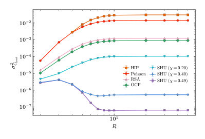
<figcaption class="paper-figure-caption"><b>Fig 4.</b> Figure 4: Variance of the relaxation-time central- ity, σ2 Cheat, for geometric networks as a function of the connection radius R. Similar to the structural descriptors, diffusion dynamics capture the hyper- uniform character of the underlying point configu- rations. Across the broad spectrum of systems con- sidered, hyperuniform geometric networks exhibit re- duced diffusion-relaxation heterogeneity.</figcaption>
</figure>
<figure class="paper-figure-card">
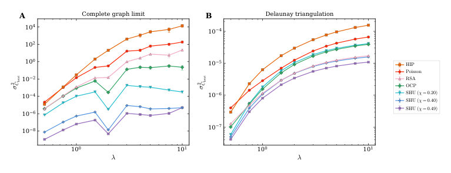
<figcaption class="paper-figure-caption"><b>Fig 5.</b> Figure 5: Variance of the relaxation-time centrality, σ2 Cheat, for (A) weighted complete graphs and (B) Delaunay triangulation networks over a wide range of λ. Because geometric networks converge rapidly toward the complete-graph limit, panel A shows that the diffusion hierarchy persists in the weighted complete-graph limit. By contrast, Delaunay triangulation cannot distinguish the near-hyperuniform RSA configurations from the more locally disordered OCP and SHU χ = 0.20 systems.</figcaption>
</figure>
</div>
<p><strong>Summary.</strong> This work establishes that hyperuniformity, a state of suppressed density fluctuations, leaves distinct fingerprints on the structure and dynamics of geometric networks. By comparing these signatures to standard network representations, the authors show that hyperuniformity leads to reduced structural heterogeneity and more uniform diffusion relaxation across the network.</p>
<p><strong>Why it may be interesting.</strong> The connection between macroscopic density fluctuations (hyperuniformity) and microscopic network properties (centrality, diffusion) provides a powerful, quantifiable link between continuum physics and discrete network science, relevant for understanding complex material structures.</p>
<details>
<summary>Detailed structure</summary>
<p><strong>Main problem.</strong> The paper investigates how the exotic state of hyperuniformity, characterized by suppressed long-wavelength density fluctuations, manifests structurally and dynamically in network systems.</p>
<p><strong>Main result.</strong> Geometric networks retain significantly more long-wavelength density information than Delaunay triangulations, and hyperuniformity is reflected in reduced structural heterogeneity (centrality variances) and more homogeneous diffusion relaxation behavior.</p>
<p><strong>Method.</strong> The authors compare geometric networks to Delaunay triangulations by analyzing structural observables (centralities) and introducing a relaxation-time centrality derived from solving the diffusion equation on the network Laplacian.</p>
<p><strong>Model / system.</strong> The study uses geometric networks constructed from various point configurations, including Poisson, Random Sequential Adsorption (RSA), and Stochastic Hyperuniformity (SHU) systems.</p>
<p><strong>Key observables.</strong> Closeness centrality variance ($\sigma^2 C_{	ext{close}}$), vertex strength variance ($\sigma^2 s$), eigenvector centrality variance ($\sigma^2 C_{	ext{eig}}$), and relaxation-time centrality ($   ext{Cheat}(i)$).</p>
<p><strong>Important parameters / regimes.</strong> Connection radius $R$, spatial scale $r$, and the density correlation threshold $C_0$.</p>
<p><strong>Assumptions / limitations.</strong> The analysis relies on the spectral decomposition of the weighted Laplacian matrix for diffusion dynamics and assumes that geometric networks provide a superior representation of long-range density correlations.</p>
<p><strong>Figures summary.</strong> Figures illustrate geometric network constructions and compare density correlations $C(r)$ for different system types. Other figures show the scaling of the critical connection radius $R_c(r)$ and the variances of structural and diffusion metrics.</p>
<p><strong>Paper structure.</strong> The paper progresses by first establishing the need for better network representations than Delaunay triangulations, then quantifying the structural signatures of hyperuniformity using centrality measures, and finally connecting these structural findings to the dynamics by analyzing diffusion relaxation times.</p>
</details>
<details>
<summary>Abstract</summary>
<p>Disordered hyperuniformity is a recently discovered exotic state exhibiting anomalously suppressed density fluctuations at long wavelengths, and its generalization to network systems remains an important open question. Here, we show that, across a wide range of systems, geometric networks retain substantially more long-wavelength density information from the underlying point configurations than Delaunay triangulations. Within geometric networks, hyperuniformity manifests as suppressed vertex-to-vertex fluctuations in a range of network structural observables, including closeness centrality, vertex strength, and eigenvector centrality. These measures not only distinguish hyperuniform networks from non-hyperuniform ones, but also separate near-hyperuniform configurations from hyperuniform systems with strong local disorder, solving a central challenge in network hyperuniformity. We connect these structural signatures to network dynamics by introducing a relaxation-time centrality based on diffusion and demonstrate that hyperuniform geometric networks exhibit more homogeneous relaxation behavior than non-hyperuniform geometric networks. These results reveal how the suppression of large-scale density fluctuations manifests in both network structure and diffusion dynamics.</p>
</details>
<p><sub><a href="#top">↑ back to top</a></sub></p>

<p><a id="paper-2610.24435"></a></p>
<h3 id="energy-optimal-scheduling-for-clocked-reversible-computing"><a href="http://arxiv.org/abs/2610.24435v1">Energy-optimal scheduling for clocked reversible computing</a></h3>
<p><strong>Authors:</strong> Michael C. Thumann, David Soloveichik<br>
<strong>Type:</strong> theory · <strong>Category:</strong> statistical mechanics · <strong>PDF:</strong> <a href="https://arxiv.org/pdf/2610.24435v1">https://arxiv.org/pdf/2610.24435v1</a><br>
<strong>Analysis basis:</strong> full PDF text, analyzed in chunks</p>
<div class="figure-strip-hint">↔ Scroll figures horizontally</div>
<div class="paper-figures-scroll">
<figure class="paper-figure-card">
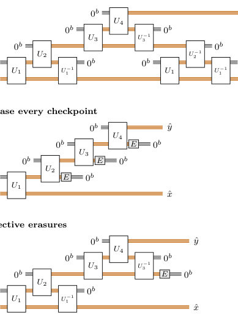
<figcaption class="paper-figure-caption"><b>Fig 1.</b> FIG. 1. Three n = 4 schedules. Each wire carries one node, orange wires are live checkpoint bits, and black bun- dles marked 0b are blank ancillas. Panel (a) uses reversible uncomputation, panel (b) erases each old checkpoint immedi- ately, and panel (c) uses one elective erasure.</figcaption>
</figure>
<figure class="paper-figure-card">
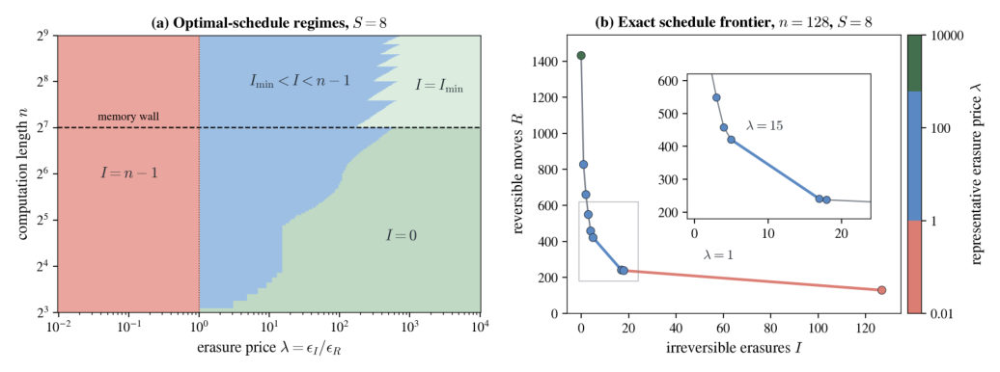
<figcaption class="paper-figure-caption"><b>Fig 2.</b> FIG. 2. Exact schedule structure at S = 8. (a) Optimal erasure count I in the (n, λ) plane, from the exact recurrence on a 241-point logarithmic price grid, with Imin as defined in the text. The dashed line marks the memory wall n = 2S−1 = 128. (b) Supported reversible-move/erasure frontier at the memory wall n = 128. Color indicates a representative price λ that selects each supported (I, R) schedule.</figcaption>
</figure>
<figure class="paper-figure-card">
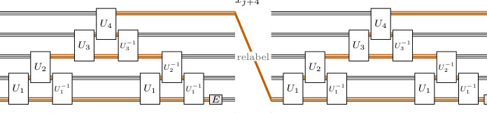
<figcaption class="paper-figure-caption"><b>Fig 3.</b> FIG. 3. Two interior periods of the optimal bulk schedule for S = 4 and λ = 8, where B∗ str = 4 and F(4, 3) = 9. Each period uses at most four live pebbles, performs nine reversible moves, erases the old boundary once, and relabels the output as the next input. Thus q interior periods have R = 9q, I = q, and normalized cost 17q. The protected global input and final output contribute only a bounded endpoint correction.</figcaption>
</figure>
<figure class="paper-figure-card">
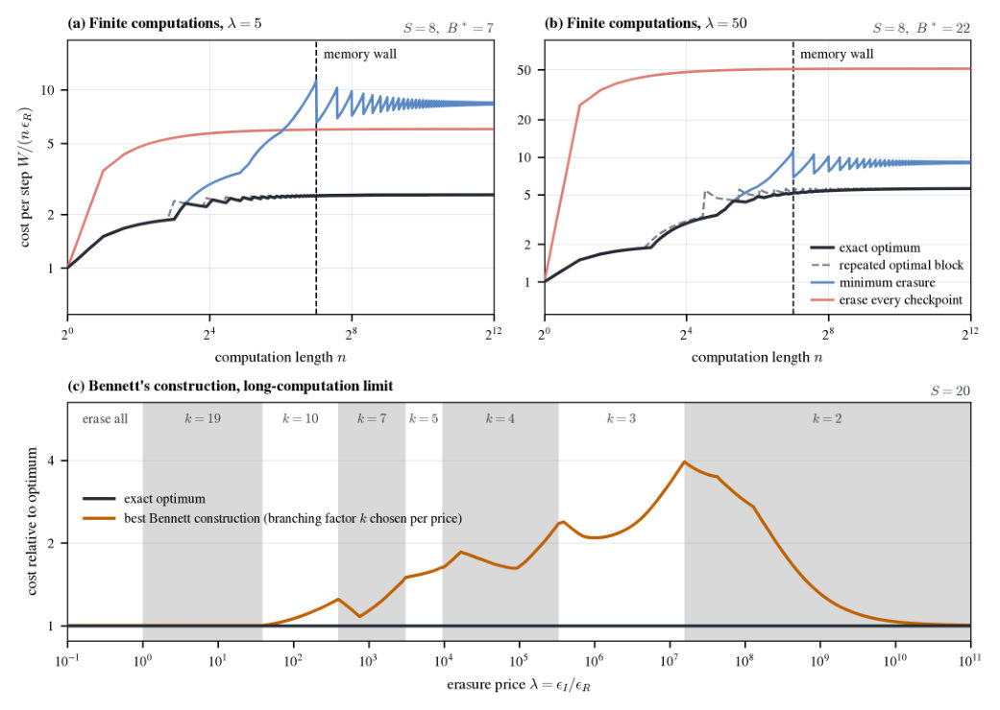
<figcaption class="paper-figure-caption"><b>Fig 4.</b> FIG. 4. Optimal schedule compared with simpler strategies. (a),(b) Cost per step C/n at S = 8 for λ = 5 and 50 using the exact optimum of Eq. (5), the repeated optimal block of Theorem 2 (B∗ str = 7 and 22), the best minimum-erasure schedule (the λ →∞optimum), and erasing every checkpoint (the two-pebble glider). The dashed line marks the memory wall n = 2S−1. (c) The bulk cost of Bennett’s construction [4] relative to the exact bulk optimum at S = 20. We repeat Bennett’s recursive construction in blocks and erase the boundary checkpoint between consecutive blocks. At each erasure price we choose the number of segments per level k and the recursion depth h that give the lowest cost per...</figcaption>
</figure>
<figure class="paper-figure-card">
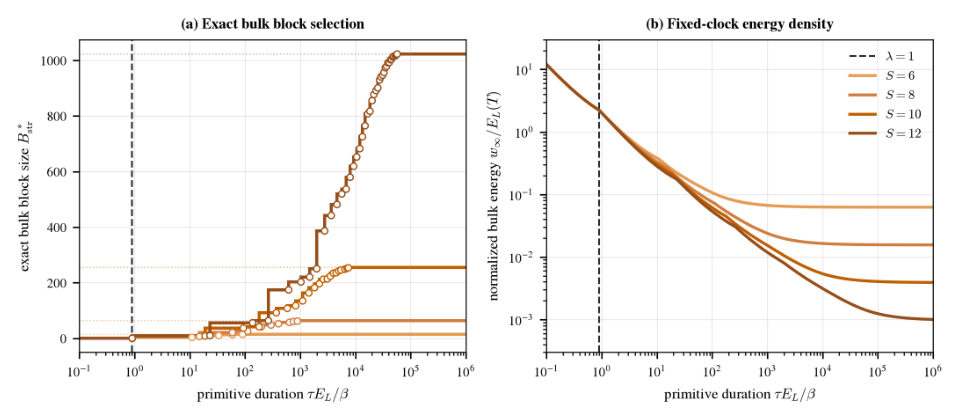
<figcaption class="paper-figure-caption"><b>Fig 5.</b> FIG. 5. Exact fixed-period bulk optimum for S = 6, 8, 10, 12 under Eq. (13), with bα/β = 0.1 and the illustrative validity domain τEL(T)/β ≥0.1. (a) Optimal strict-block length B∗ str. Dotted lines mark Bmax = 2S−2. At an exact crossover several block lengths tie. The curve breaks ties by minimizing the operation density [F(B, S −1) + 1]/B, and open markers show the shortest tied block. At λ = 1 the curve displays B = 1. (b) Corresponding normalized bulk work. The dashed line marks λ = 1, at τEL/β = 0.9; to its left every optimal non-output disposal is an erasure and additional checkpoint memory does not lower the work, and reversible removals may tie on the line itself. This is an...</figcaption>
</figure>
</div>
<p><strong>Summary.</strong> This work analyzes the energy-optimal scheduling for reversible quantum computation constrained by finite time and limited memory. It formulates the problem as minimizing a cost function based on reversible moves versus irreversible erasures. The key finding is that the optimal schedule adopts a periodic pattern of reversible computation followed by an erasure, providing theoretical guidelines for energy-efficient hardware design.</p>
<p><strong>Why it may be interesting.</strong> The explicit connection between computational resource management (memory, time) and thermodynamic costs (energy dissipation) provides a rigorous framework for understanding energy efficiency in nanoscale computing devices.</p>
<details>
<summary>Detailed structure</summary>
<p><strong>Main problem.</strong> The paper determines the energy-optimal scheduling for clocked reversible computing under finite time and limited memory, requiring a trade-off between reversible cleanup and irreversible erasures.</p>
<p><strong>Main result.</strong> The optimal schedule in the bulk repeats a strictly reversible block followed by one local erasure, with the optimal structure governed by the ratio of erasure to reversible move costs ($\lambda$).</p>
<p><strong>Method.</strong> The problem is mapped to a 'priced pebble game' and solved using dynamic programming, deriving an exact separator recurrence relation to establish the minimum cost function.</p>
<p><strong>Model / system.</strong> The model is an externally clocked, thermally coupled computer performing computation on a line graph structure, where energy costs are associated with reversible checkpoint moves ($\epsilon_R$) and local erasures ($\epsilon_I$).</p>
<p><strong>Key observables.</strong> Minimum energy cost $C_\lambda(n, S)$, optimal schedule structure (reversible block + erasure), and the cost per step ($
ho_{str}$).</p>
<p><strong>Important parameters / regimes.</strong> The cost ratio $\lambda = \epsilon_I / \epsilon_R$, the space bound $S$ (memory), and the computation length $n$.</p>
<p><strong>Assumptions / limitations.</strong> The analysis assumes a fixed hardware operating point and initially focuses on line computations, though it connects to a stochastic-thermodynamic constitutive model.</p>
<p><strong>Figures summary.</strong> Figures illustrate different schedule types (reversible uncomputation, erasure, elective erasure) and show the optimal cost per step compared to other strategies.</p>
<p><strong>Paper structure.</strong> The paper establishes the problem as a priced pebble game, derives the recurrence relation via separator decomposition, analyzes the bulk limit to find the optimal periodic structure, and finally connects this scheduling theorem to physical parameters using a stochastic-thermodynamic model.</p>
</details>
<details>
<summary>Abstract</summary>
<p>Computational dissipation may arise from both information erasure and finite-time operation, although both contributions can in principle be avoided in the absence of space and time constraints. Logically reversible computation can replace erasure with ancilla cleanup, and slow adiabatic protocols can eliminate any excess finite-time dissipation. Under limited memory and in finite time, however, choosing reversible cleanup over erasure requires additional dissipative operations, creating a semi-reversible energy--memory--time tradeoff. We formulate this tradeoff at a fixed operating point of an externally clocked thermally coupled computer, where reversible checkpoint moves and local irreversible erasures have specified effective prices $ε_R$ and $ε_I$. Their ratio $λ=ε_I/ε_R$ selects an energy-optimal semi-reversible schedule under a checkpoint-memory bound by trading reversible moves against erasures. For a sequential computation whose dependency graph is a line, we derive an exact separator recurrence and prove that an asymptotically optimal schedule repeats a strictly reversible block followed by one local erasure. Coupling this scheduling theorem to a stochastic-thermodynamic constitutive model shows how temperature, primitive duration, memory, and device-dependent operation costs determine whether the optimal schedule uses reversible cleanup, elective erasures, or erasure at every disposal.</p>
</details>
<p><sub><a href="#top">↑ back to top</a></sub></p>

<p><a id="paper-2610.26536"></a></p>
<h3 id="exact-cost-of-the-euclidean-maximum-traveling-salesman-problem-in-one-dimension"><a href="http://arxiv.org/abs/2610.26536v1">Exact cost of the Euclidean Maximum Traveling Salesman Problem in one dimension</a></h3>
<p><strong>Authors:</strong> Sergio Caracciolo, Carlo Vanoni<br>
<strong>Type:</strong> theory · <strong>Category:</strong> disordered systems and neural networks · <strong>PDF:</strong> <a href="https://arxiv.org/pdf/2610.26536v1">https://arxiv.org/pdf/2610.26536v1</a><br>
<strong>Analysis basis:</strong> full PDF text, analyzed in chunks</p>
<div class="figure-strip-hint">↔ Scroll figures horizontally</div>
<div class="paper-figures-scroll">
<figure class="paper-figure-card">
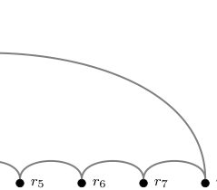
<figcaption class="paper-figure-caption"><b>Fig 1.</b> Figure 2. MinTSP solution for 0 &lt; p &lt; 1 and MaxTSP solution for p &lt; 0 when N = 8</figcaption>
</figure>
<figure class="paper-figure-card">
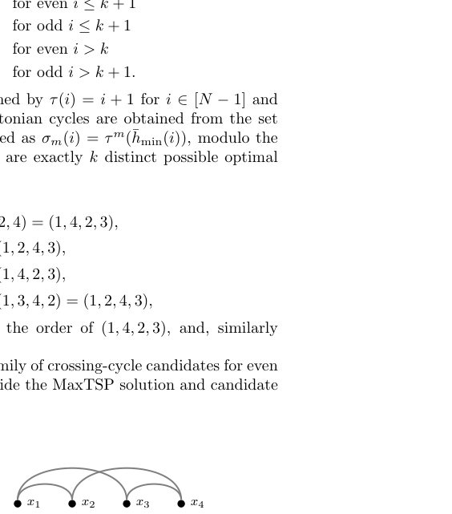
<figcaption class="paper-figure-caption"><b>Fig 2.</b> Figure 4. Possible MinTSP for p &lt; 0 and MaxTSP solution for 0 &lt; p &lt; 1 when N = 4, which corresponds to the permutation cycles (1, 3, 2, 4) and (1, 3, 4, 2). Both of them have one cross- ing. One is obtained from the other by exchanging the two non- crossing matchings: the nested {{1, 4}, {2, 3}} with the parallel one {{1, 2}, {3, 4}}</figcaption>
</figure>
<figure class="paper-figure-card">
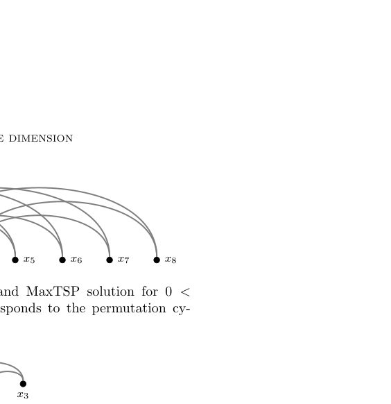
<figcaption class="paper-figure-caption"><b>Fig 3.</b> Figure 6. The unique Hamiltonian cycle for N = 3, which corre- sponds to the permutation cycle (1, 2, 3).</figcaption>
</figure>
<figure class="paper-figure-card">
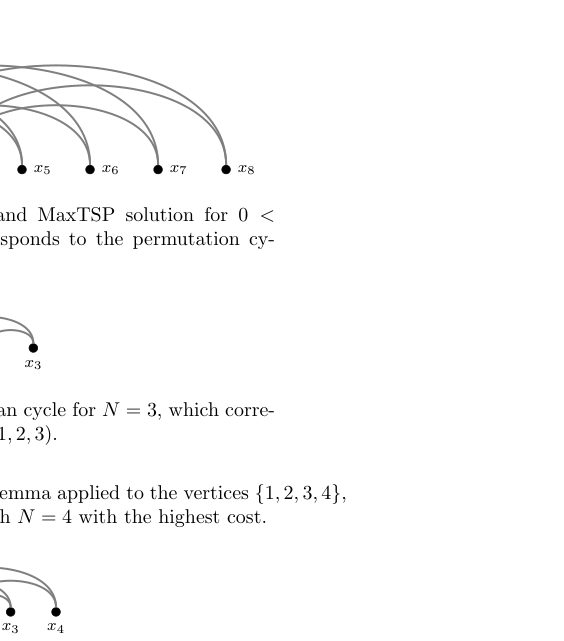
<figcaption class="paper-figure-caption"><b>Fig 4.</b> Figure 7. MaxTSP solution for N = 4, which corresponds to the permutation cycle (1, 3, 2, 4).</figcaption>
</figure>
<figure class="paper-figure-card">
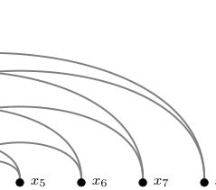
<figcaption class="paper-figure-caption"><b>Fig 5.</b> Figure 9. MaxTSP solution when p &gt; 1 for N = 8, which corre- sponds to the permutation cycle (1, 7, 3, 5, 4, 6, 2, 8).</figcaption>
</figure>
</div>
<p><strong>Summary.</strong> This paper rigorously solves the Maximum Traveling Salesman Problem on points constrained to a line, where edge costs are power-law functions of distance. It determines the optimal cycle structure based on the exponent $p$ of the cost function and derives explicit formulas for the average maximal cost using advanced probabilistic and combinatorial techniques.</p>
<p><strong>Why it may be interesting.</strong> While the core problem is combinatorial optimization, the techniques used—especially the analysis of optimal structures based on geometric properties and the use of advanced statistical mechanics tools (generating functions, asymptotic analysis)—are highly relevant to understanding energy minimization in disordered or complex physical systems.</p>
<details>
<summary>Detailed structure</summary>
<p><strong>Main problem.</strong> The paper studies the Maximum Traveling Salesman Problem (MaxTSP) for points arranged on a line segment, where the cost of traversing an edge is determined by a power-law function of the Euclidean distance.</p>
<p><strong>Main result.</strong> The average maximal cost is explicitly characterized for different regimes of the cost function exponent $p$, showing that the optimal cycle structure depends critically on the convexity/concavity of the cost function $\phi(x) = x^p$.</p>
<p><strong>Method.</strong> The analysis uses comparison lemmas based on the geometry of the cost function to determine the optimal cycle structure, followed by advanced probabilistic methods (generating functions, asymptotic analysis) to calculate the average cost.</p>
<p><strong>Model / system.</strong> The model is the MaxTSP on $N$ points sampled independently and uniformly from the unit interval $[0, 1]$. The cost function is $\phi(|x_i - x_j|) = |x_i - x_j|^p$, analyzed across regimes defined by $p > 1$, $0 < p < 1$, and $p < 0$.</p>
<p><strong>Key observables.</strong> The average maximal total cost, $E[\hat{h}_{\max}]$, for the Hamiltonian cycle.</p>
<p><strong>Important parameters / regimes.</strong> The number of points $N$, and the exponent $p$ defining the cost function $\phi(x) = x^p$.</p>
<p><strong>Assumptions / limitations.</strong> The points are sampled independently and uniformly from the unit interval. The analysis relies on comparison lemmas derived from the geometric properties of the cost function.</p>
<p><strong>Figures summary.</strong> Figures illustrate the optimal cycle configurations for small $N$ across different $p$ regimes, showing the transition between parallel, crossing, and nested edge patterns.</p>
<p><strong>Paper structure.</strong> The paper proceeds by establishing comparison lemmas based on the convexity/concavity of the cost function, deriving explicit formulas for the optimal cycle structure in different $p$ regimes, and finally calculating the average cost using generating functions and asymptotic analysis.</p>
</details>
<details>
<summary>Abstract</summary>
<p>We study the random Euclidean Maximum Traveling Salesman Problem: finding a Hamiltonian cycle of maximal total cost through any set of $N$ cities on a line, where each edge cost is a function of its Euclidean length. We characterize the maximizing cycles for convex increasing, concave increasing, and convex decreasing cost functions. For points sampled independently and uniformly from the unit interval, we derive explicit expressions for the average maximal cost for arbitrary $N$ and asymptotic expansions with power-law edge costs.</p>
</details>
<p><sub><a href="#top">↑ back to top</a></sub></p>

<p><a id="paper-2610.25196"></a></p>
<h3 id="exact-probability-laws-of-random-inner-products-dirichlet-splines-overlaps-uncertainty-and-bargmann-invariants"><a href="http://arxiv.org/abs/2610.25196v1">Exact probability laws of random inner products: Dirichlet splines, overlaps, uncertainty, and Bargmann invariants</a></h3>
<p><strong>Authors:</strong> Lin Zhang<br>
<strong>Type:</strong> theory · <strong>Category:</strong> quantum information and computing · <strong>PDF:</strong> <a href="https://arxiv.org/pdf/2610.25196v1">https://arxiv.org/pdf/2610.25196v1</a><br>
<strong>Analysis basis:</strong> full PDF text, analyzed in chunks</p>
<div class="figure-strip-hint">↔ Scroll figures horizontally</div>
<div class="paper-figures-scroll">
<figure class="paper-figure-card">
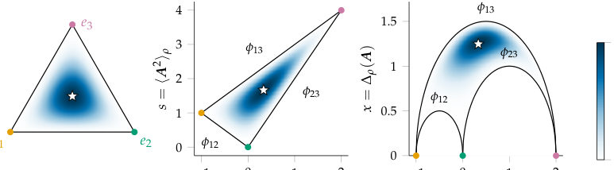
<figcaption class="paper-figure-caption"><b>Fig 1.</b> Figure 1: The Dirichlet mechanism for A = diag(−1, 0, 2) and a Hilbert–Schmidt qutrit ρ ∼µ3,3.</figcaption>
</figure>
<figure class="paper-figure-card">
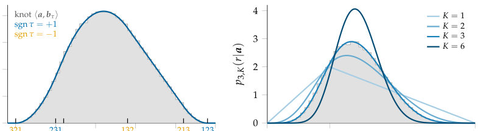
<figcaption class="paper-figure-caption"><b>Fig 2.</b> Figure 2: Spline structure of random inner products. Lines: exact densities; grey histograms:</figcaption>
</figure>
<figure class="paper-figure-card">
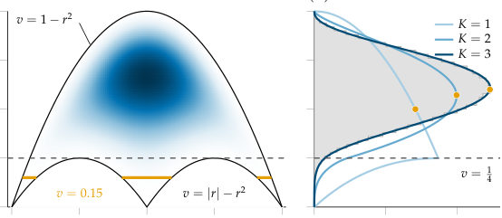
<figcaption class="paper-figure-caption"><b>Fig 3.</b> Figure 3: The qutrit variance law of Theorem 3.8, A = diag(−1, 0, 1). (a) Joint density of</figcaption>
</figure>
<figure class="paper-figure-card">
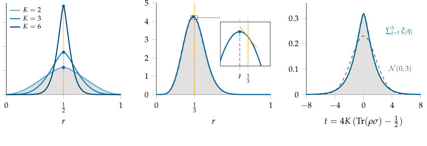
<figcaption class="paper-figure-caption"><b>Fig 4.</b> Figure 4: Mode and mean of the overlap Tr (ρσ). Dotted lines: means; dots: modes; histograms:</figcaption>
</figure>
<figure class="paper-figure-card">
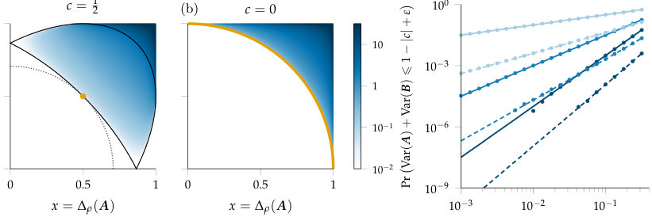
<figcaption class="paper-figure-caption"><b>Fig 5.</b> Figure 5: Probability laws on the uncertainty region of A = a · σ, B = b · σ, c = a · b. (a), (b) Joint</figcaption>
</figure>
</div>
<p><strong>Summary.</strong> This paper provides a comprehensive mathematical framework for calculating the exact probability distributions of various random inner products in quantum systems. By linking these laws to Dirichlet distributions and spline theory, it derives precise results for quantum overlaps, uncertainty measures, and complex invariants like the Bargmann invariant. This work is crucial for understanding the statistical behavior of quantum measurements and correlations.</p>
<p><strong>Why it may be interesting.</strong> The rigorous derivation of exact probability laws for fundamental quantum correlations (like overlaps and invariants) provides powerful, non-Gaussian benchmarks for quantum information theory, especially for analyzing noise or entanglement measures.</p>
<details>
<summary>Detailed structure</summary>
<p><strong>Main problem.</strong> The paper determines the exact probability laws governing various random inner products involving random quantum states and matrices.</p>
<p><strong>Main result.</strong> It derives explicit density functions for observables like overlaps and Bargmann invariants, showing how these laws are governed by underlying Dirichlet distributions and spline structures.</p>
<p><strong>Method.</strong> The analysis systematically employs mathematical tools such as Dirichlet distributions, Curry–Schoenberg splines, and Markov chain modeling to derive exact probability density functions.</p>
<p><strong>Model / system.</strong> The study focuses on random quantum states (e.g., random qubits, qutrits) and random matrices, analyzing quantities like orbital inner products, overlaps, and cyclic Bargmann invariants.</p>
<p><strong>Key observables.</strong> Orbital inner products, random overlaps ($ ext{Tr}(
ho  au)$), expectation values ($ ext{Tr}(A
ho)$), and the Bargmann invariant ($\Delta_m$).</p>
<p><strong>Important parameters / regimes.</strong> The environment dimension $K$, the number of states involved (e.g., three states for $\Delta_3$), and the dimensionality $d$ of the Hilbert space.</p>
<p><strong>Assumptions / limitations.</strong> The analysis assumes the random state $
ho$ is induced by a Haar-random pure state on $\mathbb{C}^d \otimes \mathbb{C}^K$.</p>
<p><strong>Figures summary.</strong> Figures illustrate the mapping from the diagonal distribution to the attainable region in various parameter spaces, and tables provide numerical comparisons between exact theoretical results and Monte Carlo sampling for the Bargmann invariant.</p>
<p><strong>Paper structure.</strong> The paper builds from establishing the two core mechanisms (Dirichlet distribution and numerical shadow) to applying them sequentially to calculate the laws for expectation values (splines), overlaps (mode vs. mean separation), uncertainty relations (joint standard deviations), and finally, the complex Bargmann invariants.</p>
</details>
<details>
<summary>Abstract</summary>
<p>Inner products of random matrices and random quantum states---such as orbital inner products, expectation values, overlaps, and cyclic Bargmann invariants---are shown to follow from two underlying mechanisms: the diagonal of an induced random state is Dirichlet distributed, and the expectation value of a random pure state in a rank-one or two-by-two operator is a numerical shadow on an elliptical disk. For states induced by an environment of dimension $K$, the expectation value of any observable is a Curry--Schoenberg spline with each eigenvalue repeated $K$ times, and the vector of moments has an explicit density on a simplex; for a qutrit, the variance law is obtained in finite form. The overlap of two random qubit states attains its mode at its mean for every rotation-invariant ensemble, but for Hilbert--Schmidt qutrits the density at the mean has a strictly negative derivative, so mode and mean separate; for large environments, the centred overlap converges to a variance-gamma law rather than a Gaussian. For two noncommuting qubit observables, the joint law of the two standard deviations is derived for all $K$, and the probability of coming within a small distance of the optimal sum of variances scales as a power of that distance, with a different exponent when the Bloch axes are orthogonal. For three Haar-random qubit states, the exact density of the Bargmann invariant is given in terms of a complete elliptic integral, together with its local behaviour and elementary marginals. In every dimension, the probability that its real part is negative---certifying basis-independent coherence---is computed, along with all mixed moments. For cycles of arbitrary length, the invariant is shown to be driven by an exact three-parameter Markov chain, and the logarithm of its modulus obeys a law of large numbers and a central limit theorem.</p>
</details>
<p><sub><a href="#top">↑ back to top</a></sub></p>

<p><a id="paper-2610.25315"></a></p>
<h3 id="exact-quantum-hamming-weight-computation-at-optimal-depth-and-minimum-width"><a href="http://arxiv.org/abs/2610.25315v1">Exact quantum Hamming-weight computation at optimal depth and minimum width</a></h3>
<p><strong>Authors:</strong> Wei Zi, Pei Yuan, Junhong Nie<br>
<strong>Type:</strong> theory · <strong>Category:</strong> quantum information and computing · <strong>PDF:</strong> <a href="https://arxiv.org/pdf/2610.25315v1">https://arxiv.org/pdf/2610.25315v1</a><br>
<strong>Analysis basis:</strong> full PDF text, analyzed in chunks</p>
<div class="figure-strip-hint">↔ Scroll figures horizontally</div>
<div class="paper-figures-scroll">
<figure class="paper-figure-card">
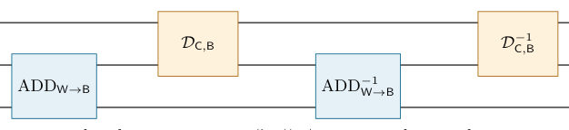
<figcaption class="paper-figure-caption"><b>Fig 1.</b> FIG. 1. Coherent counting using the input as temporary workspace. (a) A Hadamard layer prepares the output, three batches collect the weight-dependent phase, and an inverse Fourier transform reads out the binary weight. Each batch borrows registers from its complement and restores them before the next batch. (b) The input block contains the string xC, the dirty word has integer label b, and the output has integer label q. Here ADDW→B adds the output to the dirty word modulo N. The two phase operations cancel the dependence on b, leaving ωq|xC|. For a full batch, Ma replaces ADDW→B and translates all borrowed words simultaneously.</figcaption>
</figure>
<figure class="paper-figure-card">
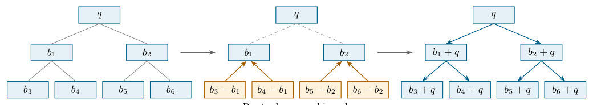
<figcaption class="paper-figure-caption"><b>Fig 2.</b> FIG. 2. Tree construction of simultaneous addition, illustrated with six target words. Each box shows the current integer label of an m-qubit register; the root is the source Q with label q. All arithmetic is modulo 2m. (a) The targets initially contain b1, . . . , b6. (b) Working from the leaves upward, subtract each target parent’s value from its child. The two edges out of Q are skipped; dashed edges mark this exception, and upward arrows indicate the traversal order. (c) Working from the root downward, add each parent’s current value to its child. Every target then contains bv + q, while Q is unchanged.</figcaption>
</figure>
<figure class="paper-figure-card">

<figcaption class="paper-figure-caption"><b>Fig 3.</b> FIG. 3. The tree pipeline after logical round t = 5 for four-qubit words. Each box has one band per bit, with bit 0 at the bottom. Blue bands are in computational encoding and can control phase gates; pale orange bands remain in Fourier form. The root Q is available from the start. The first, second, and third target levels have decoded three, two, and two bits, respectively. Adjacent nonroot levels alternate their Hadamards: the first and third target levels have just decoded a new bit in round 5, whereas the second target level last decoded a bit in round 4. The exact schedule is proved in Appendix A.</figcaption>
</figure>
<figure class="paper-figure-card">

<figcaption class="paper-figure-caption"><b>Fig 4.</b> FIG. 4. Boolean evaluation by routing with dirty workspace. (a) The input (y0, y1) = (1, 0) is stored in routers on the selected path. The state of B follows the blue path to leaf 10; bits are listed in routing order, so the integer input is y = 1. Each nonroot internal vertex has a channel Mu and a router Ru. The root has only a router, and leaves have only channels. Dashed links indicate router control. The leaf gates encode h(0, 0) = h(1, 0) = 1 and h(0, 1) = h(1, 1) = 0. All borrowed qubits may start dirty. (b) Two applications of Qh, each followed by CNOTB→T, add h(y) to the target and restore B and the tree. Operations execute from left to right. (c) Each row tracks the state...</figcaption>
</figure>
</div>
<p><strong>Summary.</strong> This paper presents the construction of highly efficient quantum circuits for fundamental tasks like Hamming weight computation and general Boolean function evaluation. By achieving optimal depth and size bounds, it advances the theoretical understanding of quantum circuit complexity. The results are vital for building practical quantum arithmetic modules.</p>
<p><strong>Why it may be interesting.</strong> The focus on achieving optimal depth and width for fundamental arithmetic primitives (like counting) is crucial for designing scalable quantum algorithms, especially those involving state preparation or quantum arithmetic.</p>
<details>
<summary>Detailed structure</summary>
<p><strong>Main problem.</strong> The primary goal is to construct exact, resource-efficient quantum circuits for computing the Hamming weight of an $n$-qubit register and evaluating general symmetric Boolean functions.</p>
<p><strong>Main result.</strong> The authors achieve optimal depth $O(\log n)$ and size $O(n \log n)$ for Hamming weight computation using only input and output qubits, and provide similar bounds for general symmetric Boolean functions.</p>
<p><strong>Method.</strong> The construction relies on combining tree structures and pipelining, utilizing techniques like the 'simultaneous modular addition lemma' and Fourier transforms to achieve depth and width optimality.</p>
<p><strong>Model / system.</strong> The model is a quantum circuit operating on $n$ input qubits and $m$ output qubits, assuming arbitrary one-qubit gates and CNOTs with all-to-all connectivity.</p>
<p><strong>Key observables.</strong> Circuit Depth ($D(U)$), Circuit Size ($S(U)$), Total Width, and the Hamming Weight of the input state.</p>
<p><strong>Important parameters / regimes.</strong> The input size $n$, the output word length $m = \lceil\log_2(n+1)
ceil$, and the required ancillary qubit count.</p>
<p><strong>Assumptions / limitations.</strong> The circuit model assumes all-to-all connectivity, and the analysis distinguishes between clean and dirty workspace qubits.</p>
<p><strong>Figures summary.</strong> Figures illustrate the counting circuit structure, the three-register example for phase collection, and the two-round pipeline for routing/address loading.</p>
<p><strong>Paper structure.</strong> The paper develops tools for arithmetic (simultaneous modular addition via path-sum permutations) before applying these tools to construct the main circuit for Hamming weight computation, followed by generalizations to arbitrary symmetric Boolean functions.</p>
</details>
<details>
<summary>Abstract</summary>
<p>Hamming-weight computation and symmetric Boolean functions are basic primitives for quantum arithmetic and state preparation, where circuit depth and qubit overhead matter. We construct an exact circuit computing the Hamming weight of an $n$-qubit register with depth $O(\log n)$ and size $O(n\log n)$, using only the $n$ input qubits and $m=\lceil\log_2(n+1)\rceil$ binary output qubits. The circuit uses arbitrary one-qubit gates and CNOTs with all-to-all connectivity. Both depth and total width are optimal. Our constructions combine tree structures and pipelining, temporarily using input qubits as workspace. We also give exact circuits for every symmetric Boolean function with the same depth and size bounds, using only $m$ ancillary qubits returned to zero. Finally, we apply the counter to exact preparation of balanced Dicke states for even $n$. With only $O(\log n)$ ancillary qubits, we obtain expected depth $O(\log^2 n)$ using measurements and classical feedforward, and depth $O(n^{1/4}\log n)$ using unitary gates alone.</p>
</details>
<p><sub><a href="#top">↑ back to top</a></sub></p>

<p><a id="paper-2610.25299"></a></p>
<h3 id="fully-quantum-fidelity-based-entropic-continuity-bounds"><a href="http://arxiv.org/abs/2610.25299v1">Fully quantum fidelity-based entropic continuity bounds</a></h3>
<p><strong>Authors:</strong> Matthew Simon Tan, Ernest Y. -Z. Tan<br>
<strong>Type:</strong> theory · <strong>Category:</strong> quantum information and computing · <strong>PDF:</strong> <a href="https://arxiv.org/pdf/2610.25299v1">https://arxiv.org/pdf/2610.25299v1</a><br>
<strong>Analysis basis:</strong> full PDF text, analyzed in chunks</p>
<div class="figure-strip-hint">↔ Scroll figures horizontally</div>
<div class="paper-figures-scroll">
<figure class="paper-figure-card">

<figcaption class="paper-figure-caption"><b>Fig 1.</b> Low-resolution page preview, page 2</figcaption>
</figure>
<figure class="paper-figure-card">

<figcaption class="paper-figure-caption"><b>Fig 2.</b> Low-resolution page preview, page 3</figcaption>
</figure>
<figure class="paper-figure-card">

<figcaption class="paper-figure-caption"><b>Fig 3.</b> Low-resolution page preview, page 4</figcaption>
</figure>
<figure class="paper-figure-card">

<figcaption class="paper-figure-caption"><b>Fig 4.</b> Low-resolution page preview, page 5</figcaption>
</figure>
<figure class="paper-figure-card">

<figcaption class="paper-figure-caption"><b>Fig 5.</b> Low-resolution page preview, page 6</figcaption>
</figure>
</div>
<p><strong>Summary.</strong> This paper develops novel, fidelity-based continuity bounds for quantum conditional entropies, generalizing results from trace distance metrics. The bounds are shown to be applicable to both finite and countably infinite-dimensional systems. This work provides theoretically improved tools for quantifying state distinguishability, particularly relevant for quantum key distribution applications.</p>
<p><strong>Why it may be interesting.</strong> The development of tighter, fidelity-based bounds for entropy differences is crucial for quantifying distinguishability in quantum communication protocols like QKD.</p>
<details>
<summary>Detailed structure</summary>
<p><strong>Main problem.</strong> The paper aims to establish continuity bounds for quantum conditional entropies using fidelity, providing an improvement over older bounds based on trace distance.</p>
<p><strong>Main result.</strong> A continuity bound is derived for the difference in sandwiched Rényi conditional entropies, which holds even when the conditioning system has infinite dimension.</p>
<p><strong>Method.</strong> The authors use path integrals along the reduced great-circle path connecting two quantum states and apply differential inequalities derived from the fidelity metric.</p>
<p><strong>Model / system.</strong> The analysis concerns quantum states on a bipartite system (A and B), focusing on the conditional entropy $H(A|B)$ and its Rényi generalizations.</p>
<p><strong>Key observables.</strong> Quantum conditional entropies (von Neumann and sandwiched Rényi), Fidelity, and the associated angular distance $\Lambda(
ho, \sigma)$.</p>
<p><strong>Important parameters / regimes.</strong> The Rényi order $\alpha \in (1/2, 1) \cup (1, \infty)$, and the dimension of the conditioning system $d_B$.</p>
<p><strong>Assumptions / limitations.</strong> The results are derived by analyzing paths of states and taking limits from finite-dimensional approximations to handle infinite dimensions.</p>
<p><strong>Figures summary.</strong> Not specified in the notes.</p>
<p><strong>Paper structure.</strong> The paper progresses by first establishing the bound for the general $\alpha$-variance, then deriving the bound for the von Neumann entropy limit, and finally presenting variants tailored for exponential functions of the Rényi entropies.</p>
</details>
<details>
<summary>Abstract</summary>
<p>We present a continuity bound for quantum conditional entropies in terms of fidelity, with no dependence on the dimension of the conditioning system. Our results encompass both the von Neumann entropy and one version of sandwiched Rényi entropy, which is particularly relevant for applications in quantum key distribution (QKD). In such applications, this bound should provide improved results as compared to previous continuity bounds based on trace distance. We also show that the bounds can be sharpened as expected for classical-quantum states, and verify that they hold when the conditioning system has countably infinite dimension. Finally, we present several variants tailored for exponential functions of the Rényi entropies instead, which should be relevant for QKD applications.</p>
</details>
<p><sub><a href="#top">↑ back to top</a></sub></p>

<p><a id="paper-2610.26435"></a></p>
<h3 id="giant-rydberg-excitons-delineated-as-relativistic-bound-states"><a href="http://arxiv.org/abs/2610.26435v1">Giant Rydberg Excitons Delineated as Relativistic Bound States</a></h3>
<p><strong>Authors:</strong> Mitsuyoshi Takahata, Ikuko Akimoto, Nobuko Naka<br>
<strong>Type:</strong> both · <strong>Category:</strong> other · <strong>PDF:</strong> <a href="https://arxiv.org/pdf/2610.26435v1">https://arxiv.org/pdf/2610.26435v1</a><br>
<strong>Analysis basis:</strong> full PDF text, analyzed in chunks</p>
<div class="figure-strip-hint">↔ Scroll figures horizontally</div>
<div class="paper-figures-scroll">
<figure class="paper-figure-card">

<figcaption class="paper-figure-caption"><b>Fig 1.</b> FIG. 1. Schematic of E(p) in (a) narrow, (b) medium, and (c) dipole-forbidden gap materials. Nonparabolic bands with relativistic dispersion are highlighted by box lettering. Eg and ∆denote the energy gap and spin-orbit energy, respectively.</figcaption>
</figure>
<figure class="paper-figure-card">

<figcaption class="paper-figure-caption"><b>Fig 2.</b> FIG. 2. (a) CR spectra of Cu2O at 6.1 K at a time delay of 100 ns following photoexcitation. Upper panel: Hole ex- citation by one-photon transition. Lower panel: Two-photon resonance excitation of excitons. (b) Schematic of band struc- ture and holes excited from the acceptor level to the valence band in Cu2O. Dashed arrows indicate the excitation scheme accompanying the generation of free electron-hole pairs. (c) Excitation power dependence of the hole signal intensity.</figcaption>
</figure>
<figure class="paper-figure-card">

<figcaption class="paper-figure-caption"><b>Fig 3.</b> FIG. 3. (a) Temporal variation of hole effective mass at T = 3.1, 10, and 20 K with ∼60 µJ incidence. The solid lines represent best-fit exponential functions. Inset: Contour map of the time-resolved spectra at 10 K. (b) Schematic of hole relaxation in momentum space. The band is shown in- verted relative to Fig. 1, with the vertical axis representing hole energy rather than electron energy. (c) Temperature de- pendence of the hole effective mass as t →∞(dots) with the fit using Eq. (10) (solid line). Dashed lines in (a)−(c) repre- sent the non-relativistic case of parabolic dispersion.</figcaption>
</figure>
<figure class="paper-figure-card">

<figcaption class="paper-figure-caption"><b>Fig 4.</b> FIG. 4. (a) Absorption spectrum measured at 2 K and res- onance energies calculated using Eq. (13) and Eg = 2.17206 eV for n = 4 −10 and ℓ= 1, 3 states (full and dotted lines) and for the non-relativistic case (dashed lines). Peaks are sat- urated because of the large sample thickness. (b) Enlarged spectrum for higher states (n ≥10).</figcaption>
</figure>
</div>
<p><strong>Summary.</strong> This work analyzes the valence band of Cu2O, finding that its energy dispersion is nonparabolic and best described by relativistic physics. By incorporating this relativistic band structure into the exciton model using the Dirac equation, the authors successfully calculate and verify the binding energies of giant Rydberg excitons. This links solid-state band structure physics directly to highly excited atomic-like quantum phenomena.</p>
<p><strong>Why it may be interesting.</strong> The explicit connection drawn between the relativistic kinematics governing the semiconductor band structure and the quantum defect in Rydberg excitons provides a powerful, unified theoretical framework for strongly interacting quasi-particles.</p>
<details>
<summary>Detailed structure</summary>
<p><strong>Main problem.</strong> To investigate the relativistic nature of the hole energy dispersion in Cu2O and use this understanding to theoretically calculate the binding energies of giant Rydberg excitons.</p>
<p><strong>Main result.</strong> The nonparabolic dispersion of the valence band is successfully modeled using relativistic kinematics, and the Dirac equation approach accurately predicts the binding energies of odd-parity Rydberg excitons.</p>
<p><strong>Method.</strong> The study combines time-resolved cyclotron resonance measurements to characterize the band dispersion with theoretical calculations employing the Dirac equation for exciton binding energies.</p>
<p><strong>Model / system.</strong> The system is the valence band of Cu2O, modeled using relativistic energy-momentum relations, and the exciton binding energies are calculated using a Dirac equation adapted for nonparabolic bands.</p>
<p><strong>Key observables.</strong> Effective mass ($m_{CR}$), nonparabolicity parameter, exciton binding energies ($E_n$), and quantum defect values ($\delta_{n,\ell}$).</p>
<p><strong>Important parameters / regimes.</strong> Rest mass (0.570 $m_e$), rescaled light speed ($1.6	imes 10^5$ m/s), and the energy gap ($E_g \approx 2172$ meV).</p>
<p><strong>Assumptions / limitations.</strong> The Dirac approach is used for binding energies, which is an isotropic approximation that neglects the spin exchange interaction for even-parity states.</p>
<p><strong>Figures summary.</strong> Figures show the time-dependent and temperature-dependent effective mass relaxation, the band dispersion vs. wavenumber, and contour maps of time-resolved cyclotron resonance spectra.</p>
<p><strong>Paper structure.</strong> The paper progresses from experimental characterization of the nonparabolic hole band dispersion via CR measurements, to deriving the relativistic dispersion relation, and finally applying the Dirac equation to calculate and compare exciton binding energies.</p>
</details>
<details>
<summary>Abstract</summary>
<p>We examined the energy-momentum relationship of the valence band of Cu$_2$O, which has gained interest as an emerging solid host for giant Rydberg states. Our findings reveal a nonparabolic dispersion, described using the rest mass (0.570 times the free electron mass) and rescaled light speed ($1.6\times 10^5$ m/s), which draws parallels with relativistic theory for high-energy particles. We propose a straightforward expression for the bound-state energies of Rydberg excitons with finite quantum defects, whose energy scheme deviates from the hydrogenic series. This formulation identifies relativistic kinematics as the physical origin of quantum defects, offering a streamlined basis for future studies on complex many-body correlations.</p>
</details>
<p><sub><a href="#top">↑ back to top</a></sub></p>

<p><a id="paper-2610.26687"></a></p>
<h3 id="ground-state-sampling-correspondence-between-penalty-based-and-constrained-quantum-annealing"><a href="http://arxiv.org/abs/2610.26687v1">Ground-State Sampling Correspondence between Penalty-Based and Constrained Quantum Annealing</a></h3>
<p><strong>Authors:</strong> Shunta Ide, Shu Tanaka<br>
<strong>Type:</strong> theory · <strong>Category:</strong> quantum information and computing · <strong>PDF:</strong> <a href="https://arxiv.org/pdf/2610.26687v1">https://arxiv.org/pdf/2610.26687v1</a><br>
<strong>Analysis basis:</strong> full PDF text, analyzed in chunks</p>
<div class="figure-strip-hint">↔ Scroll figures horizontally</div>
<div class="paper-figures-scroll">
<figure class="paper-figure-card">

<figcaption class="paper-figure-caption"><b>Fig 1.</b> FIG. 1. (a)–(d) Mean ground-state probability P QA GS and (e)–(h) mean divergence DJS(pQA, u) from the uniform distribution, as functions of the annealing time T. The distribution pQA is conditioned on obtaining a ground state. The insets in (e) and (f) show the same data for 102 ≤T ≤105 on an enlarged vertical scale. Columns from left to right correspond to N = 6, 8, 10, 12, with both quantities averaged over 100 random GBP instances for each system size. Different colors and marker shapes distinguish values of the additional penalty coefficient µ+. The error bars show the standard error of the mean. For clarity, markers and error bars are omitted at some computed annealing times, and the...</figcaption>
</figure>
<figure class="paper-figure-card">

<figcaption class="paper-figure-caption"><b>Fig 2.</b> FIG. 2. (a) Mean ground-state probability P CQA GS and (b) mean divergence DJS(pCQA, u) from the uniform distribution, as functions of the annealing time T. The distribution pCQA is conditioned on obtaining a ground state. Both quantities are averaged over 100 random GBP instances for each sys- tem size N = 6, 8, 10, 12, distinguished by colors and marker shapes. The error bars show the standard error of the mean. For clarity, markers and error bars are omitted at some com- puted annealing times, and the lines connect all computed data points.</figcaption>
</figure>
<figure class="paper-figure-card">

<figcaption class="paper-figure-caption"><b>Fig 3.</b> FIG. 3. Mean divergence DJS(pQA, pCQA) between the conditional ground-state distributions at the same annealing time T, averaged over 100 instances per size. Colors and marker shapes distinguish the additional penalty µ+. The error bars show the standard error of the mean. From left to right, the columns correspond to the system size N = 6, 8, 10, 12. For clarity, markers and error bars are omitted at some computed annealing times, and the lines connect all computed data points.</figcaption>
</figure>
<figure class="paper-figure-card">

<figcaption class="paper-figure-caption"><b>Fig 4.</b> FIG. 4. Schematic of the correspondence between the effective Hamiltonians of QA and CQA within the ground-state manifold. The horizontal arrow indicates increasing additional penalty µ+. In QA, a single-spin flip takes a ground state |gk⟩ to an infeasible intermediate state |m⟩with excitation energy ∆Eobj + 4µ [Eq. (25)]. The central boxes show the first- and second-order terms of the QA effective Hamiltonian. The first-order term vanishes because a single flip leaves the ground-state manifold, so the leading term arises at second order through virtual flips to these intermediate states. For small µ+ (left), the excitation energies differ among the intermediate states. For large µ+...</figcaption>
</figure>
<figure class="paper-figure-card">

<figcaption class="paper-figure-caption"><b>Fig 5.</b> FIG. 5. Agreement between the conditional ground-state dis- tributions of QA and CQA as a function of r = 4µ/∆max. (a) JS divergence DJS(pQA, pCQA) at T = 105 for N = 6, 8, 10, 12. Each faint dot represents one instance–penalty pair. For each N, the slope of the solid line is the median of the per- instance log–log slopes fitted over r ≥1 using points with DJS &gt; 10−10. This median slope is given in the legend. The symbols on each line are shown only for visibility. The me- dian includes instances for which a slope can be estimated from the retained points. The dashed line guides the eye with an r−2 dependence. (b) Fraction fmatch of instance–penalty pairs satisfying P QA GS &gt; 0.99, P CQA GS...</figcaption>
</figure>
</div>
<p><strong>Summary.</strong> This paper theoretically compares two methods—penalty-based and constrained—for enforcing hard constraints in quantum annealing for optimization problems. It demonstrates that under appropriate conditions (large penalties and long times), the sampling biases of both methods converge. This convergence is explained by showing that the effective Hamiltonian of the penalty method generates an interaction term matching the leading term of the constrained method's effective Hamiltonian.</p>
<p><strong>Why it may be interesting.</strong> This work provides a deep theoretical understanding of how different physical implementations (penalty vs. direct constraint) in quantum computation converge to the same physical result, offering insight into the underlying structure of quantum annealing dynamics.</p>
<details>
<summary>Detailed structure</summary>
<p><strong>Main problem.</strong> The paper investigates the theoretical correspondence in ground-state sampling between two methods for enforcing constraints in Quantum Annealing (QA): the penalty method and Constrained Quantum Annealing (CQA).</p>
<p><strong>Main result.</strong> The conditional ground-state distribution from penalty-based QA approaches that of CQA at large penalties and long annealing times, which is explained by the effective Hamiltonian generating a second-order interaction matching the leading term of the CQA effective Hamiltonian.</p>
<p><strong>Method.</strong> The analysis uses degenerate perturbation theory to derive effective Hamiltonians and compares ground-state sampling biases using the Jensen-Shannon divergence.</p>
<p><strong>Model / system.</strong> The model is applied to the Graph Bipartitioning Problem (GBP), an NP-hard combinatorial optimization problem, analyzed via its associated Hamiltonians ($H_{obj}$, $H_{QA}^c$, $H_{CQA}^c$).</p>
<p><strong>Key observables.</strong> Conditional ground-state distribution, Jensen-Shannon divergence ($D_{JS}$), and the matching fraction ($f_{match}$).</p>
<p><strong>Important parameters / regimes.</strong> The penalty coefficient ($\mu$), the annealing time ($T$), and the ratio of penalty to objective energy ($\mu / E_{obj}$).</p>
<p><strong>Assumptions / limitations.</strong> The analysis relies on the assumption that the system follows the instantaneous ground state within the accessible subspace, and that the effective Hamiltonian analysis is valid for large penalties.</p>
<p><strong>Figures summary.</strong> Figures show the JS divergence decreasing approximately as the inverse square of the penalty-to-objective energy ratio ($r^{-2}$), and the matching fraction ($f_{match}$) increasing with the penalty parameter ($r$).</p>
<p><strong>Paper structure.</strong> The paper first defines the Hamiltonians for both QA and CQA for constrained optimization problems. It then uses degenerate perturbation theory to derive the effective Hamiltonians. Finally, it compares the resulting ground-state sampling distributions numerically and theoretically, showing convergence under specific conditions.</p>
</details>
<details>
<summary>Abstract</summary>
<p>Quantum annealing generally samples degenerate ground states with nonuniform probabilities. This unfair sampling depends on how the driver Hamiltonian couples these states near the end of annealing. For combinatorial optimization problems with a cardinality constraint, the penalty method and constrained quantum annealing (CQA) differ in these couplings. The transverse-field driver of the penalty method does not directly couple feasible ground states, whereas the fully connected XY driver of CQA couples pairs of them related by a single spin exchange. We investigate how this difference affects ground-state sampling, using closed-system simulations of random graph bipartitioning instances together with degenerate perturbation theory. For the instances studied, the conditional ground-state distribution of penalty-based quantum annealing approaches that of CQA at sufficiently large penalties and long annealing times. This convergence can be explained by the effective Hamiltonian of penalty-based quantum annealing, in which virtual single-spin flips to infeasible states generate a second-order interaction proportional to the CQA driver projected onto the feasible ground-state manifold, which is the leading term of the effective Hamiltonian of CQA. In the numerical simulations, the Jensen--Shannon divergence between the conditional ground-state distributions of penalty-based quantum annealing and CQA decreases approximately as the inverse square of the penalty-to-objective energy ratio, consistent with the perturbative analysis. This correspondence between the effective Hamiltonians extends to equal-weight fixed-magnetization constraints under the same perturbative conditions, providing a common mechanism for sampling bias in the two implementations.</p>
</details>
<p><sub><a href="#top">↑ back to top</a></sub></p>

<p><a id="paper-2610.26381"></a></p>
<h3 id="higher-order-parity-constraints-for-quantum-approximate-optimization"><a href="http://arxiv.org/abs/2610.26381v1">Higher-order Parity Constraints for Quantum Approximate Optimization</a></h3>
<p><strong>Authors:</strong> Anita Weidinger, Glen Bigan Mbeng, Roeland ter Hoeven, Wolfgang Lechner<br>
<strong>Type:</strong> both · <strong>Category:</strong> quantum information and computing · <strong>PDF:</strong> <a href="https://arxiv.org/pdf/2610.26381v1">https://arxiv.org/pdf/2610.26381v1</a><br>
<strong>Analysis basis:</strong> full PDF text, analyzed in chunks</p>
<div class="figure-strip-hint">↔ Scroll figures horizontally</div>
<div class="paper-figures-scroll">
<figure class="paper-figure-card">

<figcaption class="paper-figure-caption"><b>Fig 1.</b> FIG. 1. Heavy-hex graph with N = 21 nodes in its logical (a) and Parity (b) representation. Interactions in the logical graph can be implemented via Rzz gates and constraints in the Parity graph with CNOT and Rzz gates, shown next to the graphs in (c). Panel (d) shows the best found parameters for p ∈{1, 2, 3} during optimization. Parameters at p = 1 are denoted by a single marker, while parameters at p = 2 and p = 3 with two or three markers that are connected via a dashed and solid line, respectively.</figcaption>
</figure>
<figure class="paper-figure-card">

<figcaption class="paper-figure-caption"><b>Fig 2.</b> FIG. 2. Ground state probability PGS of noiseless simulations (grey) and hardware experiments on ibm torino (colored) as a function of the two-qubit gate depth for a heavy-hex graph of N = 21 nodes. The first marker correspond to p = 1, the second marker to p = 2 and so on. Best parameters obtained from the classical simulations were used for a single job with 4096 measurements. For Parity QAOA one spanning tree M = 1 is used for decoding. For the green line Parity’ the first constraint unitary is applied despite Ω1 = 0, showing the impact of noise from the additional constraint layer.</figcaption>
</figure>
<figure class="paper-figure-card">

<figcaption class="paper-figure-caption"><b>Fig 3.</b> FIG. 3. Two-qubit gate depth and two-qubit gate count (with Rzz gates) for the first entangling layer of random 3-regular graphs on a square grid (a) and on a heavy-hex topology (b). The top panel in (c) shows the covering depth cp and the bottom panel shows the number of qubits in the entangling gates (constraints, interactions). Panel (d) shows the total two-qubit gate depth (two-qubit gate depth multiplied by cp) and total two-qubit gate count needed to cover the whole graph on a square grid layout.</figcaption>
</figure>
<figure class="paper-figure-card">

<figcaption class="paper-figure-caption"><b>Fig 4.</b> FIG. 4. 3-regular graph with N = 14 nodes in its (a) logical and (b) Parity representation. Panel (c) shows the average of the best found parameters for both QAOA variants. Parameters for p = 1 are presented with a single marker and for p = 2 and p = 3 the markers are connect by a dashed and solid, respectively. Error bars denote the standard deviation.</figcaption>
</figure>
<figure class="paper-figure-card">

<figcaption class="paper-figure-caption"><b>Fig 5.</b> FIG. 5. Ground state probability PGS obtained from experiments on the ibm fez machine for 3-regular graphs of size (a) N = 14 , (b) N = 30 and (c) N = 40. The solid lines denote the average over 12 random instances for (a) and 20 random instances for (b) and (c), error bars denote the standard deviation. The first marker correspond to p = 1, the second marker to p = 2 and so on. Results from noiseless simulations for N = 14 are represented by gray lines in (a), square markers for parity and dots for the direct implementation. The simulated graphs for N &gt; 14 are shown in the inlet. Panel (d) shows the fraction of instances where the QAOA algorithm measured the ground state at least once...</figcaption>
</figure>
</div>
<p><strong>Summary.</strong> This paper proposes using a Parity Architecture to enhance the Quantum Approximate Optimization Algorithm (QAOA) for solving optimization problems like Signed Max-Cut. By identifying specific parity transformations, the authors show that the resulting algorithm can effectively propagate correlations across sparse graphs, achieving optimal solutions where standard QAOA fails on larger instances. This work advances the practical application of quantum algorithms by addressing underlying physical constraints.</p>
<p><strong>Why it may be interesting.</strong> The explicit comparison of algorithmic depth metrics (covering depth vs. gate depth) and the demonstration of superior performance on hard instances makes this highly relevant for quantum algorithm design.</p>
<details>
<summary>Detailed structure</summary>
<p><strong>Main problem.</strong> The paper aims to enhance the success probability of the Quantum Approximate Optimization Algorithm (QAOA) for solving optimization problems on hardware-native and sparse graphs.</p>
<p><strong>Main result.</strong> The parity-based QAOA successfully identifies optimal solutions for 40-vertex Signed Max-Cut instances, whereas the conventional QAOA fails under the same conditions when error mitigation is applied.</p>
<p><strong>Method.</strong> The authors employ a parity transformation to map the problem Hamiltonian into a form solvable by QAOA, utilizing higher-order parity constraints to accelerate correlation propagation.</p>
<p><strong>Model / system.</strong> The work focuses on the Signed Max-Cut problem, modeled by a problem Hamiltonian $H_P$, and implemented on quantum hardware, specifically tested on IBM Heron processors.</p>
<p><strong>Key observables.</strong> Success Probability (PGS), circuit depth, and covering depth ($c_p$).</p>
<p><strong>Important parameters / regimes.</strong> The number of vertices (up to 40), the QAOA parameters $(eta, \gamma)$, and the graph structure (e.g., 3-regular graphs).</p>
<p><strong>Assumptions / limitations.</strong> The analysis assumes the applicability of parity constraints to extend QAOA benefits beyond mere hardware connectivity, and relies on classical optimization of QAOA parameters.</p>
<p><strong>Figures summary.</strong> Figures illustrate the mapping of graphs (like the heavy-hex graph) into logical and parity representations, and plot the PGS versus two-qubit gate depth comparing the two QAOA variants.</p>
<p><strong>Paper structure.</strong> The paper introduces the problem, details the parity transformation and the resulting Hamiltonian structure, compares the performance metrics (like covering depth) against conventional QAOA, and concludes with numerical results on large instances.</p>
</details>
<details>
<summary>Abstract</summary>
<p>The Parity Architecture was originally introduced in the context of quantum optimization algorithms to overcome hardware connectivity constraints. Here, we show that its benefits extend beyond this role by identifying specific parity transformations that enhance the success probability of the Quantum Approximate Optimization Algorithm (QAOA) for optimization problems defined on hardware-native and sparse graphs. Numerical simulations suggest that this enhancement originates from the higher-order operators introduced by the Parity representation, which accelerate the propagation of correlations across the physical device. We investigate this mechanism for the Signed Max-Cut problem on 3-regular graph instances and demonstrate its practical relevance on IBM Heron quantum processors. QAOA parameters are first classically optimized on small training instances containing up to 14 vertices and subsequently transferred to larger instances executed on quantum hardware. We consider Signed Max-Cut instances of up to 40 vertices and find that, together with an error mitigation technique, the parity-based QAOA identifies the optimal solutions for all the considered 40-vertex instances, whereas the conventional QAOA fails under the same conditions.</p>
</details>
<p><sub><a href="#top">↑ back to top</a></sub></p>

<p><a id="paper-2610.25213"></a></p>
<h3 id="liftdiff-guided-discrete-diffusion-for-quantum-code-construction"><a href="http://arxiv.org/abs/2610.25213v1">LiftDiff: Guided Discrete Diffusion for Quantum Code Construction</a></h3>
<p><strong>Authors:</strong> Yotam Peled, Eliya Nachmani<br>
<strong>Type:</strong> theory · <strong>Category:</strong> quantum information and computing · <strong>PDF:</strong> <a href="https://arxiv.org/pdf/2610.25213v1">https://arxiv.org/pdf/2610.25213v1</a><br>
<strong>Analysis basis:</strong> full PDF text, analyzed in chunks</p>
<div class="figure-strip-hint">↔ Scroll figures horizontally</div>
<div class="paper-figures-scroll">
<figure class="paper-figure-card">

<figcaption class="paper-figure-caption"><b>Fig 1.</b> Figure 1: Overview of the inference process. The matrix Mt and timestep t are input to the model, producing logits zt. The logits are passed through a sigmoid function and fed into the guidance mechanism, whose output adjusts the prediction to obtain zg t . The guided logits are passed through a second sigmoid function, and the resulting output is used to produce Mt−1.</figcaption>
</figure>
<figure class="paper-figure-card">

<figcaption class="paper-figure-caption"><b>Fig 2.</b> Figure 2: Selected codes from Table 1 against the baselines. Each marker is one code, colored by its wchk. Circles are codes from this work, tagged with their row number in Table 1. Squares are BB codes of Bravyi et al. (2024) and diamonds the CSS codes of Cruz-Benito et al. (2026). (a) Encoding rate k/n against distance d. (b) Block length n against kd2/n. Codes sharing a point exactly are offset by a small fraction of the axis. Baseline key: B1 [[288, 12, 18]], B2 [[144, 12, 12]], B3 [[108, 8, 10]], B4 [[72, 12, 6]]; C1 [[360, 20, ≤14]], C2 [[360, 16, ≤14]], C3 [[288, 24, 12]], C4 [[288, 16, 12]], C5 [[144, 8, 12]], C6 [[288, 50, 8]], C7 [[288, 32, 6]], C8 [[144, 24, 6]].</figcaption>
</figure>
<figure class="paper-figure-card">

<figcaption class="paper-figure-caption"><b>Fig 3.</b> Figure 3: (a) Code-capacity block LER vs. physical error rate p for four LiftDiff codes and the [[144,12,12]] BB code. Each label’s index identifies the code in Table 1. (b) Share of codes that differ from their unguided counterpart per denoising step. (c) Weight-distance cells where guidance produces more codes (blue) or fewer (red) than unguided generation. Distances are upper bounds.</figcaption>
</figure>
</div>
<p><strong>Summary.</strong> This paper introduces LiftDiff, a novel generative framework that uses discrete denoising diffusion models to discover high-performing Quantum Error-Correcting Codes (QECCs). By training the model to generate base matrices guided by quantum code properties, the authors efficiently search the vast code space, yielding codes that outperform existing benchmarks in terms of error correction capability.</p>
<p><strong>Why it may be interesting.</strong> The application of advanced generative AI models, like diffusion processes, to the highly structured and mathematically complex domain of quantum error correction is a significant methodological advance for quantum information theory.</p>
<details>
<summary>Detailed structure</summary>
<p><strong>Main problem.</strong> The primary challenge is discovering Quantum Error-Correcting Codes (QECCs) that achieve a high encoding rate while maintaining sufficient error-correcting distance.</p>
<p><strong>Main result.</strong> The proposed LiftDiff method successfully discovers novel QECCs, such as [[247, 19, 14]], that outperform established codes like the Gross code across various noise models.</p>
<p><strong>Method.</strong> The authors introduce LiftDiff, a generative framework that uses a discrete denoising diffusion model trained on base matrices to construct Low-Density Parity-Check (LDPC) quantum codes.</p>
<p><strong>Model / system.</strong> The system involves constructing QECCs, specifically Low-Density Parity-Check (LDPC) codes, by generating their base matrices over the group algebra F2[Z_l]. The process is guided by an energy function that incorporates code properties.</p>
<p><strong>Key observables.</strong> Code parameters like $[[n, k, d]]$, girth, degree, sparsity, and the Logical Error Rate (LER) under physical error rates ($p$).</p>
<p><strong>Important parameters / regimes.</strong> The physical error rate $p$ (tested from $10^{-3}$ to $10^{-4}$), and the code parameters themselves (e.g., $[[260, 24, 10]]$).</p>
<p><strong>Assumptions / limitations.</strong> The guidance mechanism relies on the differentiability of quantum code properties (like girth and decoding error) to steer the diffusion sampler.</p>
<p><strong>Figures summary.</strong> Figure 4 compares the Logical Error Rate (LER) vs. physical error rate ($p$) for codes generated by LiftDiff against a baseline code, showing superior performance for the generated codes. Other figures illustrate the effect of the guidance mechanism on code structure.</p>
<p><strong>Paper structure.</strong> The paper introduces the problem of QECC design, details the LiftDiff methodology (training the diffusion model on base matrices and using a guided reverse process), presents the energy function incorporating multiple code diagnostics, and concludes with performance comparisons showing the efficacy of the generative approach.</p>
</details>
<details>
<summary>Abstract</summary>
<p>The realization of fault-tolerant quantum computation relies on Quantum Error-Correcting Codes (QECC). Of particular interest are codes that combine a high encoding rate with sufficient distance. Existing algebraic constructions, such as lifted product (LP) codes, build a large quantum low-density parity-check (qLDPC) code from a classical base matrix. In this work we introduce LiftDiff, a generative approach to the discovery of QECC. A discrete denoising diffusion model is trained to generate base matrices over the group algebra $\mathbb{F}_2[\mathbb{Z}_\ell]$, which are then expanded into LP codes. The reverse diffusion process is guided by an energy function that evaluates quantum code properties, including girth, degree, sparsity and decoding performance, steering the sampler toward matrices that yield LP codes with favorable parameters. Our method discovers codes with parameters such as $[[169,13,11]]$, $[[143,15,9]]$, and $[[260,24,10]]$, including a $[[247,19,14]]$ code that achieves the highest ${kd^2}/{n}$ among the baselines. Moreover, several discovered codes outperform the Gross code across a broad range of the tested physical error rates under both code-capacity and circuit-level noise.</p>
</details>
<p><sub><a href="#top">↑ back to top</a></sub></p>

<p><a id="paper-2610.26483"></a></p>
<h3 id="majorization-for-superpositions-of-nonorthogonal-states-and-the-existence-of-golden-states"><a href="http://arxiv.org/abs/2610.26483v1">Majorization for superpositions of nonorthogonal states and the existence of golden states</a></h3>
<p><strong>Authors:</strong> Gökhan Torun<br>
<strong>Type:</strong> theory · <strong>Category:</strong> other · <strong>PDF:</strong> <a href="https://arxiv.org/pdf/2610.26483v1">https://arxiv.org/pdf/2610.26483v1</a><br>
<strong>Analysis basis:</strong> full PDF text, analyzed in chunks</p>
<div class="figure-strip-hint">↔ Scroll figures horizontally</div>
<div class="paper-figures-scroll">
<figure class="paper-figure-card">

<figcaption class="paper-figure-caption"><b>Fig 1.</b> FIG. 1. L¨owdin weight w1 of the maximally superposed state |Ψu⟩∝P</figcaption>
</figure>
<figure class="paper-figure-card">

<figcaption class="paper-figure-caption"><b>Fig 2.</b> FIG. 2. Robustness of superposition for three reference states with equal real overlap s. Solid: the maximum Γ −1 over all states, attained by P</figcaption>
</figure>
<figure class="paper-figure-card">

<figcaption class="paper-figure-caption"><b>Fig 3.</b> FIG. 3. Golden states for three reference states with equal overlap modulus s and Bargmann phase Φ. Above the upper solid curve (hatched), S is not positive definite. Below it, golden states under MFO exist everywhere, and golden states under FO exist exactly in the shaded region, s ≥2 cos[(π + |Φ|)/3] (Theorem 3). Dotted, dashed, and dash-dotted lines: contours of Γ−1 from Eq. (41). The edges Φ = 0 and |Φ| = π correspond to s &gt; 0 and, with modulus |s|, to s &lt; 0 in Fig. 2.</figcaption>
</figure>
<figure class="paper-figure-card">

<figcaption class="paper-figure-caption"><b>Fig 4.</b> FIG. 4. L¨owdin witness for d = 2 and S12 = s = 1/2, shown in the disk of real states (y = 0) of the Bloch ball, with the L¨owdin basis |l1⟩, |l2⟩at the poles. All free states lie on the thick chord, which lies in the plane x = s (dashed), where the L¨owdin coherence Ku = −x for the optimal u = (1, −1)T equals λmin −1. Every state off this plane carries superposition; in this slice, all states in the plane are free. In the shaded region, Eq. (64) gives MR ≥(s −x)/(1 −s); this bound is attained throughout the shaded region and is largest at the golden state |Ψu⟩. The maximally mixed state (center) carries superposition; the uniform mixture ˆχ does not.</figcaption>
</figure>
</div>
<p><strong>Summary.</strong> This theoretical paper develops the resource theory of superposition for nonorthogonal quantum states. It introduces 'golden states' as those exhibiting maximal superposition, deriving necessary and sufficient mathematical criteria—such as Gram majorization—that govern their existence depending on the allowed quantum operations. The work provides a rigorous mathematical toolset for quantifying quantum coherence beyond simple entanglement measures.</p>
<p><strong>Why it may be interesting.</strong> It provides a deep mathematical framework for understanding when quantum resources (superposition) are maximally present, linking geometric measures to algebraic constraints like majorization theory.</p>
<details>
<summary>Detailed structure</summary>
<p><strong>Main problem.</strong> The paper characterizes and quantifies quantum features like superposition and coherence using resource theories, specifically focusing on the resource theory of superposition (RTS) for nonorthogonal reference states.</p>
<p><strong>Main result.</strong> It establishes necessary and sufficient criteria, such as Gram majorization for certain free operations, for a state to be 'golden,' and shows that the existence of these states depends critically on the allowed free operations.</p>
<p><strong>Method.</strong> The analysis employs advanced mathematical tools including the Löwdin basis transformation, resource theory formalisms (Robustness and Geometric Measure of Superposition), and majorization theory.</p>
<p><strong>Model / system.</strong> The study concerns the superposition of nonorthogonal quantum states, characterized by their overlap matrix $S$. The analysis is general, applicable to any set of reference states $\{|c_j
angle\}$ in a Hilbert space.</p>
<p><strong>Key observables.</strong> Robustness and geometric measure of superposition, the overlap matrix $S$, the Löwdin basis weights, and the quantity $\Gamma(S)$ related to the ground-state energy of an XY model.</p>
<p><strong>Important parameters / regimes.</strong> The structure of the overlap matrix $S$, the number of reference states, and the specific class of free operations (MFO vs. FO).</p>
<p><strong>Assumptions / limitations.</strong> The analysis distinguishes between different types of free operations (MFO vs. FO), and the existence of golden states is shown to be operation-dependent.</p>
<p><strong>Paper structure.</strong> The paper builds from defining the resource theory of superposition for nonorthogonal states, deriving measures like robustness and geometric measure, establishing criteria for 'golden states' under different free operations (MFO and FO), and finally providing specific mathematical conditions (like Gram majorization) for their existence.</p>
</details>
<details>
<summary>Abstract</summary>
<p>In the resource theory of superposition relative to linearly independent, nonorthogonal reference states, golden states are known for two reference states and for special overlap matrices, and all of them are maximally coherent in the Löwdin basis. We clarify what decides their existence and their Löwdin structure. The robustness and the geometric measure of superposition are maximized by the same states, which overlap equally with every reference state; their maximal values are set by the ground-state energy of a classical $XY$ model on the overlaps of the dual basis. For every overlap matrix, these states, and only these, are golden under the maximal superposition-free operations, but they need not be maximally coherent in the Löwdin basis. For the Kraus-type free operations, we prove a necessary and sufficient criterion, Gram majorization, for converting pure states into targets with nonzero coefficients; it reduces to majorization for orthonormal reference states. It shows that golden states of these operations must be maximally coherent in the Löwdin basis, but that this does not ensure their existence: three reference states that are not orthonormal admit a golden state if and only if their overlaps have a common modulus $s$ and their Bargmann phase $Φ$ obeys $s\geq2\cos[(π+|Φ|)/3]$. Equal-overlap states also yield a complete family of superposition witnesses in the Löwdin basis, which show that white noise on the span of the reference states is a resource unless these states are orthonormal.</p>
</details>
<p><sub><a href="#top">↑ back to top</a></sub></p>

<p><a id="paper-2610.24340"></a></p>
<h3 id="maximum-temperature-theorem-for-a-nanothermometer"><a href="http://arxiv.org/abs/2610.24340v1">Maximum-Temperature Theorem for a Nanothermometer</a></h3>
<p><strong>Authors:</strong> Taras Plakhotnik<br>
<strong>Type:</strong> theory · <strong>Category:</strong> statistical mechanics · <strong>PDF:</strong> <a href="https://arxiv.org/pdf/2610.24340v1">https://arxiv.org/pdf/2610.24340v1</a><br>
<strong>Analysis basis:</strong> full PDF text, analyzed in chunks</p>
<div class="figure-strip-hint">↔ Scroll figures horizontally</div>
<div class="paper-figures-scroll">
<figure class="paper-figure-card">

<figcaption class="paper-figure-caption"><b>Fig 1.</b> FIG. 1. Geometries relevant to the maximum- temperature theorem. (a) A selected temperature level can enclose several disconnected hot domains. Their union is denoted by Vh = V1 ∪V2, and its total volume by Vh. The thin orange curves illustrate isothermal boundaries cor- responding to several temperature levels Υ. The hot domains expand and may merge as Υ decreases. (b) The largest av- erage temperature attainable by a sensor of volume Vs out- side Vh is obtained when its thermometrically active region Vs occupies the hottest available volume immediately out- side the hot domains; this region need not be connected. (c) A compact nanosensor placed outside the hot domains can- not exceed this...</figcaption>
</figure>
<figure class="paper-figure-card">

<figcaption class="paper-figure-caption"><b>Fig 2.</b> FIG. 2. Relatively fast gas equilibration coexists with much slower membrane relaxation. (a) Temperatures of the initially hot and cold gas compartments (dotted blue) and the separating membrane (red) for structural stiffness ξ = 5 × 104. The smooth black curve is a two-exponential fit to the membrane temperature (see Supplemental Mate- rial). The gas temperatures approach each other rapidly, whereas the membrane continues to relax on a much longer time scale. (b) Gas-equilibration rate γg (blue) and slow membrane-relaxation rate γms (red, open circles) as functions of ξ. Symbols show simulation results and black lines are power-law fits. The fitted dependences, γg ∝ξ−0.51±0.01 and γms...</figcaption>
</figure>
</div>
<p><strong>Summary.</strong> This paper establishes a Maximum-Temperature Theorem providing a universal, shape-independent upper bound on the temperature rise measurable by a nanoscale sensor. The bound depends only on the total heat source power, the sensor volume, and the minimum thermal conductivity. This result severely constrains the magnitude of temperature fluctuations, suggesting that observed Kelvin-scale readings in biological systems may imply non-equilibrium or non-thermal processes.</p>
<p><strong>Why it may be interesting.</strong> The work provides a fundamental, universal constraint on thermal measurements in nanoscale physics, which is crucial for interpreting experimental data in fields like bio-thermodynamics or nano-optics where heat dissipation is critical.</p>
<details>
<summary>Detailed structure</summary>
<p><strong>Main problem.</strong> To derive a sharp, shape-independent upper bound on the quasi-steady temperature rise of a nanoscale sensor placed in a region with a known total heat generation rate.</p>
<p><strong>Main result.</strong> The maximum temperature rise is bounded by a formula dependent only on the total heat power ($\dot{Q}$), a lower bound on thermal conductivity ($\kappa_m$), and the sensor volume ($V_s$), showing that such rises are limited to the millikelvin scale.</p>
<p><strong>Method.</strong> The derivation uses integral forms of the Cauchy–Schwarz inequality applied to Fourier's heat conduction law in the quasi-steady state.</p>
<p><strong>Model / system.</strong> The analysis models heat conduction in nanoscale systems, treating the temperature field as quasi-steady, and applies the derived bound to various physical sensors like nanodiamonds or quantum dots.</p>
<p><strong>Key observables.</strong> Quasi-steady temperature rise ($\langle T 
angle_{Vs} - \Upsilon_r$), heat power ($\dot{Q}$), and thermal conductivity ($\kappa_m$).</p>
<p><strong>Important parameters / regimes.</strong> The bound is critically dependent on the sensor volume $V_s$ and the total heat power $\dot{Q}_r$.</p>
<p><strong>Assumptions / limitations.</strong> The temperature field is treated as quasi-steady, and the bound is derived assuming the existence of a lower bound $\kappa_m$ for conductivity.</p>
<p><strong>Figures summary.</strong> Figures illustrate relevant geometries for heat transfer (hot domain $V_h$, sensor $V_s$, reference $V_r$) and show the theoretical constraints on temperature rise.</p>
<p><strong>Paper structure.</strong> The paper develops the theoretical bound using mathematical inequalities, provides numerical examples contrasting the bound with expected biological temperature rises, and discusses implications for interpreting nanoscale thermal measurements.</p>
</details>
<details>
<summary>Abstract</summary>
<p>The steady-state temperature predicted for an ideal point heat source diverges in conventional heat-conduction theory, but no physical thermometer measures a point value. We derive a sharp, shape-independent upper bound on the quasi-steady temperature rise of a sensor with thermometric volume $V_\mathrm{s}$, placed anywhere inside a region enclosed by an isothermal reference surface. The bound requires only the total heat power generated in the region $\dot{Q}$, a lower bound on its thermal conductivity $κ_\mathrm{m}$, and the value of $V_\mathrm{s}$. It is otherwise independent of the heat-source distribution, domain shape, and source--sensor distance. For $\dot{Q}=50~\mathrm{pW}$, $κ_\mathrm{m} = 0.1~\mathrm{W\,m^{-1}K^{-1}}$, and $V_\mathrm{s}=10^{-22}\mathrm{\,m^3}$, approximately the volume of a $60~\mathrm{nm}$-diameter sphere, the theorem permits a maximum temperature rise of approximately $2~\mathrm{mK}$ above the reference level. The result applies directly to nanodiamonds, upconversion nanoparticles, fluorescent polymer particles, and core-shell quantum dots. It shows that neither source localization nor uncertain source-sensor separation can account for kelvin-scale readings under steady-state heat conduction.</p>
</details>
<p><sub><a href="#top">↑ back to top</a></sub></p>

<p><a id="paper-2610.25328"></a></p>
<h3 id="mode-coupling-theory-analysis-of-water-dynamics-detected-by-dielectric-spectroscopy"><a href="http://arxiv.org/abs/2610.25328v1">Mode coupling theory analysis of water dynamics detected by dielectric spectroscopy</a></h3>
<p><strong>Authors:</strong> Peter Lunkenheimer, Alois Loidl<br>
<strong>Type:</strong> both · <strong>Category:</strong> disordered systems and neural networks · <strong>PDF:</strong> <a href="https://arxiv.org/pdf/2610.25328v1">https://arxiv.org/pdf/2610.25328v1</a><br>
<strong>Analysis basis:</strong> full PDF text, analyzed in chunks</p>
<div class="figure-strip-hint">↔ Scroll figures horizontally</div>
<div class="paper-figures-scroll">
<figure class="paper-figure-card">

<figcaption class="paper-figure-caption"><b>Fig 1.</b> FIG. 1. (a) Schematic dielectric-loss spectrum of a dipolar liquid in its low-viscosity state at high temperatures above the melting point Tm. Different dynamic processes are indicated by shaded areas. (b) The same for the supercooled state at a temperature significantly below Tm. The loss minimum predicted by MCT (dotted red line) and its relevant parameters are indicated, assuming the simplest case, b = . The dashed black line shows the hypothetical spectrum in the minimum region without the fast  process.17,42 For this plot, the temperature is assumed to be sufficiently high to exclude the occurrence of excess wings or Johari-Goldstein relaxations which often appear at lower...</figcaption>
</figure>
<figure class="paper-figure-card">

<figcaption class="paper-figure-caption"><b>Fig 2.</b> FIG. 2. Dielectric loss spectra of three dipolar liquids for frequencies from 10 MHz well into the THz range. (a) Symbols: pure water at three typical temperatures.43 Dashed and solid lines: fits of the  relaxation with the CD or Debye function, respectively. Dash-dotted and dotted lines: high-frequency contributions to the 275 K spectrum as suggested in Ref. 43. The inset in (a) presents the &#x27; spectrum of water at 350 K43 with corresponding fits of the  relaxation. (b) Symbols: spectra of a 14.8 mol% aqueous LiCl solution, corrected for the contributions from charge transport.43,91 Dashed lines: fits of the  peaks with the Havriliak-Negami function (see Ref. 43 for details). (c)...</figcaption>
</figure>
<figure class="paper-figure-card">

<figcaption class="paper-figure-caption"><b>Fig 3.</b> FIG. 3. (a) Temperature dependent relaxation time of the main dipolar relaxation process in pure water shown using an Arrhenius representation. The data above the NML (shaded region) are from Refs. 21 () and 92 (+). Those below the NML were taken from Ref. 95. The lines (except the dotted one) show fits of the data above the NML. Dash-dotted: VFT [Eq. (7)]; dashed: MCT critical law, Eq. (1), with free parameters; solid: MCT with  fixed to 1.87, corresponding to b =  = 0.9 [cf. Eqs. (3) and (4)] where  was deduced from Fig. 2(a). The dotted line in (a) shows (T) of the strong form of water as suggested in Ref. 21. (b) Magnified view of the high-temperature region in (a). The inset shows...</figcaption>
</figure>
<figure class="paper-figure-card">

<figcaption class="paper-figure-caption"><b>Fig 4.</b> FIG. 5. (a)-(c): Temperature dependence of the -relaxation rates  of the two aqueous LiCl solutions and pure water. The chosen plot of 1/ vs T (with  fixed assuming b = , the latter deduced from Fig. 2) should result in linear behavior according to the MCT critical law, Eq. (1). The lines are the same as the solid lines shown in the Arrhenius representation of Fig. 4. (d) and (e): Exponent  (fixed) and critical temperature Tc (free fit parameter), respectively, as resulting for the three investigated liquids with salt concentration x. (f) and (g): Minimum frequency min and amplitude min, respectively, as estimated for the 14.8 mol% aqueous LiCl solution in Fig. 2(b). The chosen...</figcaption>
</figure>
<figure class="paper-figure-card">

<figcaption class="paper-figure-caption"><b>Fig 5.</b> FIG. 4. (a) Relaxation times of the main dipolar relaxation processes in pure water21,92 and two aqueous LiCl solutions21 as specified in the legend, plotted in Arrhenius representation. The shaded region indicates the NML of pure water. The solid lines show fits of (T) at high temperatures with the MCT critical law, Eq. (1) (see Table I for the parameters), where the exponent  was fixed in accord with the values for b =  found in Fig. 2 [cf. Eqs. (3) and (4)]. The dashed lines are fits with the VFT function, Eq. (7), performed at low temperatures, excluding the experimental data fitted by Eq. (1). (b) Magnified view of the high-temperature region in (a).</figcaption>
</figure>
</div>
<p><strong>Summary.</strong> This work investigates whether Mode-Coupling Theory (MCT) accurately describes the dynamics of water using broadband dielectric spectroscopy. By analyzing data from supercooled LiCl solutions and pure water, the authors demonstrate strong consistency with MCT predictions, thereby supporting the theory's applicability to liquid dynamics near the glass transition.</p>
<p><strong>Why it may be interesting.</strong> The application of MCT, a powerful theoretical tool for non-equilibrium dynamics, to a complex, highly studied system like water provides a concrete test case for theoretical models of structural arrest, which is relevant to understanding glassy dynamics in many-body systems.</p>
<details>
<summary>Detailed structure</summary>
<p><strong>Main problem.</strong> The paper aims to test the compatibility of recent broadband dielectric spectroscopy results on water, whose glass transition is highly disputed, with the predictions of Mode-Coupling Theory (MCT).</p>
<p><strong>Main result.</strong> The authors find that all available broadband dielectric data on pure water and aqueous LiCl solutions are well consistent with MCT, supporting the validity of key MCT parameters for pure water.</p>
<p><strong>Method.</strong> The study combines theoretical analysis using Mode-Coupling Theory with experimental data obtained via broadband dielectric spectroscopy on water and supercooled LiCl solutions.</p>
<p><strong>Model / system.</strong> The primary system is liquid water, studied in conjunction with aqueous LiCl solutions to achieve supercooling. The theoretical framework is Mode-Coupling Theory (MCT), a model used to describe the dynamics near the glass transition.</p>
<p><strong>Key observables.</strong> Dielectric susceptibility spectra ($\epsilon''(
u)$), $\alpha$ relaxation time ($   au_\alpha$), fast $eta$ relaxation, and the temperature dependence of these relaxation processes.</p>
<p><strong>Important parameters / regimes.</strong> Critical temperature ($T_c = 222 	ext{ K}$) and system parameter ($\lambda = 0.55$) derived for pure water.</p>
<p><strong>Assumptions / limitations.</strong> The analysis assumes that the observed dielectric relaxation processes are governed by the predictions of MCT, despite the controversy surrounding water's glass transition and the difficulty in measuring low-temperature dynamics.</p>
<p><strong>Figures summary.</strong> Figures illustrate typical loss spectra at different temperatures, showing the expected $\alpha$ relaxation and the fast $eta$ process, and also show plots detailing the dependence of MCT exponents on salt concentration.</p>
<p><strong>Paper structure.</strong> The paper proceeds by first establishing the theoretical framework of MCT, then applying it to analyze broadband dielectric data from LiCl solutions and pure water, confirming consistency across multiple spectral features and parameter dependencies.</p>
</details>
<details>
<summary>Abstract</summary>
<p>Mode-coupling theory (MCT), one of the most prominent models of the glass transition, also makes various specific predictions for the molecular dynamics in the liquid state of matter. They can be best experimentally tested by evaluating susceptibility spectra covering a broad frequency range. In the present work, we clarify whether the most recent broadband dielectric-spectroscopy results on water, whose glass transition is highly disputed, are compatible with MCT. The so-called fast beta process, expected within this theory, should be detectable at low temperatures only, inaccessible in water due to its inevitable crystallization upon cooling. Therefore, we also investigate data on aqueous LiCl solutions, which can be easily supercooled. We find that all the available broadband dielectric data on these solutions and pure water are well consistent with MCT. Notably, this includes the expected interrelation of the critical temperature dependence of the alpha relaxation to its often-neglected non-Debye spectral shape. Moreover, the available data on the fast beta process, detected in a 14.8 mol% LiCl solution, are also well consistent with the theory. We find a smooth development of the derived MCT parameters with salt concentration which supports the validity of the critical temperature Tc = 222 K and system parameter lambda = 0.55 deduced here for pure water. We also compare the current dielectric relaxation-time results to those determined by other experimental methods and address the question whether information on the controversial fragile-to-strong transition of water can be obtained from such data. Finally, we discuss the significance of the dominant dielectric relaxation process of water for the glass transition as described by MCT, especially considering scenarios questioning its association with the alpha relaxation.</p>
</details>
<p><sub><a href="#top">↑ back to top</a></sub></p>

<p><a id="paper-2610.25878"></a></p>
<h3 id="non-planar-contact-structures-with-calabi-yau-fillings-and-topological-quantum-computation"><a href="http://arxiv.org/abs/2610.25878v1">Non-planar contact structures with Calabi-Yau Fillings and topological quantum computation</a></h3>
<p><strong>Authors:</strong> Atsuhide Mori<br>
<strong>Type:</strong> theory · <strong>Category:</strong> quantum information and computing · <strong>PDF:</strong> <a href="https://arxiv.org/pdf/2610.25878v1">https://arxiv.org/pdf/2610.25878v1</a><br>
<strong>Analysis basis:</strong> full PDF text, analyzed in chunks</p>
<div class="figure-strip-hint">↔ Scroll figures horizontally</div>
<div class="paper-figures-scroll">
<figure class="paper-figure-card">

<figcaption class="paper-figure-caption"><b>Fig 1.</b> Low-resolution page preview, page 2</figcaption>
</figure>
<figure class="paper-figure-card">

<figcaption class="paper-figure-caption"><b>Fig 2.</b> Low-resolution page preview, page 3</figcaption>
</figure>
<figure class="paper-figure-card">

<figcaption class="paper-figure-caption"><b>Fig 3.</b> Low-resolution page preview, page 4</figcaption>
</figure>
<figure class="paper-figure-card">

<figcaption class="paper-figure-caption"><b>Fig 4.</b> Low-resolution page preview, page 5</figcaption>
</figure>
<figure class="paper-figure-card">

<figcaption class="paper-figure-caption"><b>Fig 5.</b> Low-resolution page preview, page 6</figcaption>
</figure>
</div>
<p><strong>Summary.</strong> This work generalizes topological quantum computation theory to non-planar settings by analyzing contact structures with Calabi-Yau fillings. It establishes that the CY condition imposes constraints on the underlying geometry, and crucially, it distinguishes between Ising and Fibonacci anyon models based on whether the quantum state retains a relative phase after fixing the geometric structure.</p>
<p><strong>Why it may be interesting.</strong> It provides a deep mathematical framework connecting geometric invariants (CY manifolds) to the algebraic constraints imposed by different topological quantum field theories (Ising/Fibonacci), which is central to understanding fault-tolerant quantum computation.</p>
<details>
<summary>Detailed structure</summary>
<p><strong>Main problem.</strong> The paper extends the study of topological quantum computation from planar to non-planar contact structures, linking geometric properties (Calabi-Yau fillings) to quantum field theories (Ising and Fibonacci anyons).</p>
<p><strong>Main result.</strong> In the non-planar case, the CY condition is not restricted to the shortest factorization, and the choice between Ising and Fibonacci fusion rules dictates whether a relative phase can remain undetermined on the resulting quantum state.</p>
<p><strong>Method.</strong> The analysis combines algebraic topology (Riemann-Hurwitz formula, homology, vanishing cycles) with concepts from quantum field theory (fusion rules, braid representations) to derive necessary and sufficient conditions for the Calabi-Yau property.</p>
<p><strong>Model / system.</strong> The system involves a surface $P$ of genus $g$ with a connected binding, which is modeled as a degree-three cover of the disk. The quantum side is governed by anyonic models, specifically Ising and Fibonacci theories, whose fusion channels determine the structure of the quantum state.</p>
<p><strong>Key observables.</strong> Calabi-Yau (CY) condition ($c_1(W)=0$), dimension of joint eigenspaces, relative phases, and the structure of the maximal system of disjoint liftable arcs.</p>
<p><strong>Important parameters / regimes.</strong> Genus $g$, number of branch points $n=2g+2$, and the specific fusion rules of the underlying anyon models.</p>
<p><strong>Assumptions / limitations.</strong> The analysis assumes the binding is connected and relies on the existence of a Hurwitz system for the branch set $\Delta$.</p>
<p><strong>Paper structure.</strong> The paper progresses by first establishing the non-planar topological framework (genus $g$ cover), then deriving the integral residue criterion for the CY condition, and finally comparing the implications of the CY condition on the quantum structure using Ising versus Fibonacci fusion rules.</p>
</details>
<details>
<summary>Abstract</summary>
<p>This paper is a non-planar counterpart of the author's earlier work on planar contact structures and topological quantum computation. There the page is planar and all branch points are paired by disjoint liftable arcs, compatibly with the joint eigenlines of the Ising representation and with Calabi-Yau (CY) Stein fillings, those with vanishing first Chern class. Here the page has genus g and connected binding, presented as a simple degree-three cover of the disk. Every maximal system of disjoint liftable arcs has exactly g members and leaves two branch points unused. The half-twist interchanging the two points is not liftable, but its cube is, and lifts to the identity. An integral residue criterion supplies the CY test. A factorization localized on a contact connected sum is automatically CY. Unlike in the planar case, a CY factorization need not be the shortest. Once the fusion channels of the g pairs are fixed, Ising fusion determines the channel of the remaining pair, and braiding acts there only by scalars. Fibonacci fusion can leave that channel undetermined, and the powers of the cube then act by ten distinct relative phases on a single joint eigenspace, while the CY Stein filling stays fixed</p>
</details>
<p><sub><a href="#top">↑ back to top</a></sub></p>
<hr>
<p>
<a href="index.html">← Index</a>
 · <a href="papers_08.html">← Previous</a> · <a href="papers_10.html">Next →</a>
</p>
<hr>

</body>
</html>
